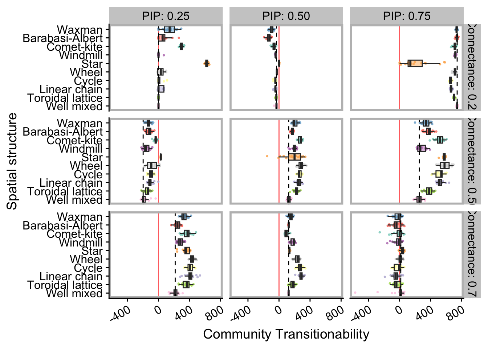
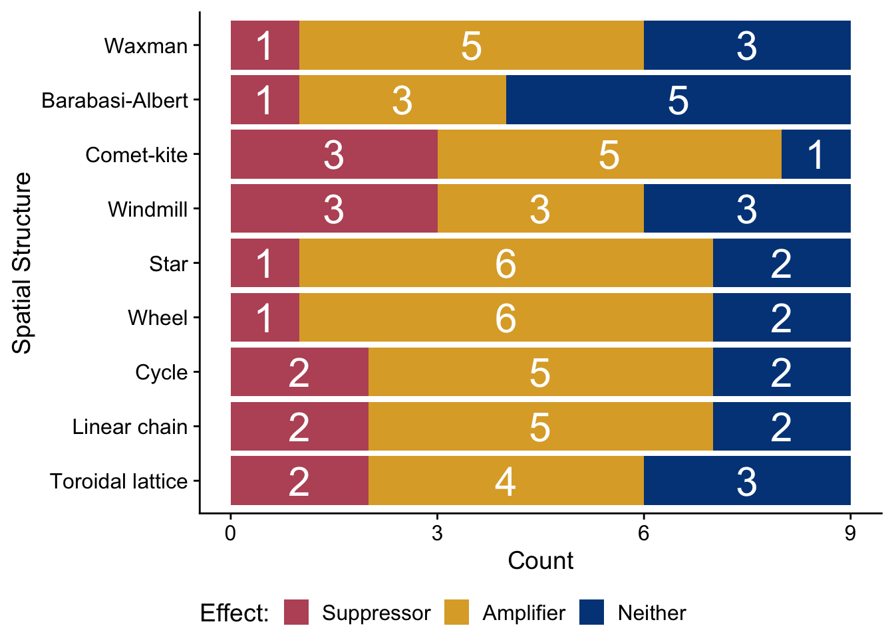

Chapter 7 Community transitionability analyses
7.1 Dependencies and setup
library(tidyverse)
library(cowplot)
library(RColorBrewer)
library(khroma)
library(rstatix)
library(knitr)
library(kableExtra)
library(ggh4x)
source("https://gist.githubusercontent.com/benmarwick/2a1bb0133ff568cbe28d/raw/fb53bd97121f7f9ce947837ef1a4c65a73bffb3f/geom_flat_violin.R")# Check if Rmd is being compiled using bookdown
bookdown <- exists("bookdown_build")experiment_slug <- "2024-03-08-varied-interaction-matrices"
working_directory <- paste(
"experiments",
experiment_slug,
"analysis",
sep = "/"
)
# Adjust working directory if being knitted for bookdown build.
if (bookdown) {
working_directory <- paste0(
bookdown_wd_prefix,
working_directory
)
}
plot_dir <- paste(
working_directory,
"plots",
sep = "/"
)
# Load summary data from final update
data_path <- paste(
working_directory,
"data",
"world_summary_final_update.csv",
sep = "/"
)
data <- read_csv(data_path)Set cowplot theme as default plotting theme.
theme_set(theme_cowplot())7.2 Data preprocessing
data <- data %>%
mutate(
interaction_matrix = as.factor(interaction_matrix),
graph_type = as.factor(graph_type),
summary_mode = as.factor(summary_mode),
update = as.numeric(update),
SEED = as.factor(SEED)
)
# Separate proof-of-concept runs from other interaction matrics
# (we don't use the proof-of-concept in our analyses)
poc_data <- data %>% filter(interaction_matrix == "orig-pof")
data <- data %>%
filter(interaction_matrix != "orig-pof") %>%
mutate(
im_connectance = case_when(
str_detect(interaction_matrix, "c25") ~ "25",
str_detect(interaction_matrix, "c50") ~ "50",
str_detect(interaction_matrix, "c75") ~ "75"
),
im_pip = case_when(
str_detect(interaction_matrix, "pip25") ~ "25",
str_detect(interaction_matrix, "pip50") ~ "50",
str_detect(interaction_matrix, "pip75") ~ "75"
)
) %>%
mutate(
im_connectance = as.factor(im_connectance),
im_pip = as.factor(im_pip)
)
# Ensure that we're isolating values from end-of-simulation.
max_update <- max(data$update)
final_update_data <- data %>%
filter(update == max_update)There are several different summarization methods supported by the chemical ecology model software. Here, we use the ranked-threshold metric.
rt_final_data <- final_update_data %>%
filter(summary_mode == "ranked_threshold")
rt_final_data <- rt_final_data %>%
mutate(
Connectance = case_when(
im_connectance == "25" ~ "0.25",
im_connectance == "50" ~ "0.50",
im_connectance == "75" ~ "0.75"
),
PIP = case_when(
im_pip == "25" ~ "0.25",
im_pip == "50" ~ "0.50",
im_pip == "75" ~ "0.75"
)
)Calculate the median transitionability score (logged_mult_score) for each well-mixed regime.
wm_median <- rt_final_data %>%
filter(graph_type == "well-mixed") %>%
dplyr::group_by(interaction_matrix, Connectance, PIP) %>%
dplyr::summarize(wm_median = median(logged_mult_score))7.3 Final transitionability scores
We visualize the final community transitionability scores (logged_mult_score) for each spatial structure regime across for each interaction network.
For each interaction matric, we draw a vertical dashed line (black) to indicate median transitionability score achived in the well-mixed regime.
This value serves as the baseline expectation in the absence of spatial structure.
Additionally, we draw a solid vertical line (red) to indicate 0 on the transitionability score axis. Transitionability scores greater than zero indicate that a community exhibited dynamics more closely resembling pure adaptive dynamics than pure ecological dynamics. Transitionability scores less than zero indicate that a community exhibited dynamics more closely resembling pure ecological dynamics than pure adaptive dynamics.
# Provide explicit ordering for graph ticks/labels
graph_ticks <- c(
"well-mixed",
"toroidal-lattice",
"linear-chain",
"cycle",
"wheel",
"star",
"windmill",
"comet-kite",
"random-barabasi-albert",
"random-waxman"
)
graph_labels <- c(
"Well mixed",
"Toroidal lattice",
"Linear chain",
"Cycle",
"Wheel",
"Star",
"Windmill",
"Comet-kite",
"Barabasi-Albert",
"Waxman"
)
plot_final <- ggplot(
rt_final_data,
aes(
x = graph_type,
y = logged_mult_score,
fill = graph_type
)
) +
geom_hline(
yintercept = 0,
color = "red",
linetype = "solid",
alpha = 0.65
) +
geom_point(
mapping = aes(color = graph_type),
position = position_jitter(width = .15),
size = .5,
alpha = 0.8
) +
geom_boxplot(
outlier.shape = NA,
alpha = 0.5
) +
geom_hline(
data = wm_median,
aes(yintercept = wm_median),
linetype = "dashed"
) +
scale_color_brewer(palette = "Set3") +
scale_fill_brewer(palette = "Set3") +
scale_x_discrete(
name = "Spatial structure",
limits = graph_ticks,
breaks = graph_ticks,
labels = graph_labels
) +
scale_y_continuous(
name = "Community Transitionability"
) +
ggh4x::facet_grid2(
Connectance ~ PIP,
labeller = label_both
) +
coord_flip() +
theme(
legend.position = "none",
axis.text.x = element_text(
angle = 30,
hjust = 1
),
panel.border = element_rect(color = "gray", size = 2)
)
ggsave(
paste(
plot_dir,
"final_ranked_thresh_logged_mult_score.pdf",
sep = "/"
),
plot = plot_final,
width = 8.5,
height = 8
)
plot_final
For reference, we generate a table of mean and median transitionability scores per-regime per-experiment:
summary_data <- rt_final_data %>%
dplyr::group_by(interaction_matrix, graph_type) %>%
dplyr::summarize(
score_median = median(logged_mult_score),
score_mean = mean(logged_mult_score),
replicates = n()
) %>%
arrange(score_median, .by_group = TRUE)
summary_table <- summary_data %>%
kable() %>%
kable_styling(
latex_options = "striped"
)
save_kable(
summary_table,
paste(
plot_dir,
"summary_table.pdf",
sep = "/"
)
)
summary_table| interaction_matrix | graph_type | score_median | score_mean | replicates |
|---|---|---|---|---|
| c25pip25 | windmill | -0.1552570 | 3.2755443 | 20 |
| c25pip25 | cycle | -0.1448880 | 23.2577198 | 20 |
| c25pip25 | linear-chain | -0.1448875 | 30.0107428 | 20 |
| c25pip25 | toroidal-lattice | -0.1398950 | -0.1386467 | 20 |
| c25pip25 | well-mixed | -0.1274125 | -0.1274118 | 20 |
| c25pip25 | wheel | 29.1941680 | 29.2538536 | 20 |
| c25pip25 | random-barabasi-albert | 52.5468000 | 58.7830525 | 20 |
| c25pip25 | random-waxman | 142.6250000 | 132.2016943 | 20 |
| c25pip25 | comet-kite | 290.7705000 | 294.3542000 | 20 |
| c25pip25 | star | 622.3975000 | 621.4329500 | 20 |
| c25pip50 | random-barabasi-albert | -123.7055000 | -128.4367700 | 20 |
| c25pip50 | random-waxman | -85.6997500 | -93.6634050 | 20 |
| c25pip50 | comet-kite | -62.4832500 | -64.5371050 | 20 |
| c25pip50 | cycle | -46.8019500 | -48.0774750 | 20 |
| c25pip50 | linear-chain | -46.2323500 | -47.4541800 | 20 |
| c25pip50 | windmill | -44.0345500 | -44.8190350 | 20 |
| c25pip50 | toroidal-lattice | -34.1670000 | -36.9710150 | 20 |
| c25pip50 | well-mixed | -32.6162000 | -34.8772050 | 20 |
| c25pip50 | wheel | -27.7729000 | -27.7023650 | 20 |
| c25pip50 | star | 2.4022500 | 2.3551140 | 20 |
| c25pip75 | star | 140.4695000 | 206.2041715 | 20 |
| c25pip75 | cycle | 658.9540000 | 657.9878500 | 20 |
| c25pip75 | linear-chain | 664.6090000 | 665.7244000 | 20 |
| c25pip75 | toroidal-lattice | 703.8705000 | 705.6194500 | 20 |
| c25pip75 | wheel | 715.5445000 | 713.2512500 | 20 |
| c25pip75 | comet-kite | 717.4210000 | 711.4932000 | 20 |
| c25pip75 | windmill | 720.5355000 | 719.9272500 | 20 |
| c25pip75 | random-waxman | 736.0230000 | 736.1203000 | 20 |
| c25pip75 | random-barabasi-albert | 739.2250000 | 738.5561500 | 20 |
| c25pip75 | well-mixed | 743.1275000 | 742.8270000 | 20 |
| c50pip25 | well-mixed | -198.2860000 | -179.9309250 | 20 |
| c50pip25 | windmill | -164.2615000 | -158.1420900 | 20 |
| c50pip25 | toroidal-lattice | -136.0975000 | -146.1914300 | 20 |
| c50pip25 | random-waxman | -128.2555000 | -127.8362350 | 20 |
| c50pip25 | random-barabasi-albert | -119.6675000 | -124.3501100 | 20 |
| c50pip25 | linear-chain | -109.6645000 | -104.4384365 | 20 |
| c50pip25 | cycle | -96.3967500 | -96.4360300 | 20 |
| c50pip25 | wheel | -93.1401500 | -80.2479790 | 20 |
| c50pip25 | comet-kite | -35.9154000 | -38.5166250 | 20 |
| c50pip25 | star | 29.5336000 | 29.6897650 | 20 |
| c50pip50 | well-mixed | 124.5965000 | 126.7944950 | 20 |
| c50pip50 | random-barabasi-albert | 175.8165000 | 171.1758000 | 20 |
| c50pip50 | windmill | 195.5930000 | 192.2814000 | 20 |
| c50pip50 | random-waxman | 196.9120000 | 207.3342000 | 20 |
| c50pip50 | star | 200.4315000 | 179.9736390 | 20 |
| c50pip50 | toroidal-lattice | 224.4375000 | 221.0585000 | 20 |
| c50pip50 | linear-chain | 254.4380000 | 257.4893000 | 20 |
| c50pip50 | cycle | 260.7760000 | 265.9643500 | 20 |
| c50pip50 | comet-kite | 280.7530000 | 272.8958000 | 20 |
| c50pip50 | wheel | 286.9300000 | 282.9178000 | 20 |
| c50pip75 | well-mixed | 256.7610000 | 254.8647500 | 20 |
| c50pip75 | windmill | 268.4115000 | 284.2451000 | 20 |
| c50pip75 | random-waxman | 344.5975000 | 337.5601000 | 20 |
| c50pip75 | random-barabasi-albert | 378.4345000 | 376.6597000 | 20 |
| c50pip75 | toroidal-lattice | 382.7610000 | 377.3860000 | 20 |
| c50pip75 | linear-chain | 516.4060000 | 526.6507000 | 20 |
| c50pip75 | comet-kite | 520.2015000 | 517.2678500 | 20 |
| c50pip75 | cycle | 538.1730000 | 518.6681500 | 20 |
| c50pip75 | star | 580.5000000 | 575.3854500 | 20 |
| c50pip75 | wheel | 580.5095000 | 583.9934500 | 20 |
| c75pip25 | well-mixed | 214.6415000 | 213.1840000 | 20 |
| c75pip25 | random-barabasi-albert | 244.2360000 | 243.7660000 | 20 |
| c75pip25 | windmill | 282.1830000 | 281.7641500 | 20 |
| c75pip25 | random-waxman | 321.3525000 | 329.0571000 | 20 |
| c75pip25 | star | 353.5715000 | 355.4357000 | 20 |
| c75pip25 | toroidal-lattice | 364.6130000 | 358.8891000 | 20 |
| c75pip25 | comet-kite | 373.8350000 | 367.9652500 | 20 |
| c75pip25 | cycle | 404.5610000 | 406.7842000 | 20 |
| c75pip25 | linear-chain | 405.0900000 | 408.0693500 | 20 |
| c75pip25 | wheel | 433.8655000 | 434.2465500 | 20 |
| c75pip50 | comet-kite | 93.4602000 | 96.4563600 | 20 |
| c75pip50 | well-mixed | 123.8665000 | 123.9225000 | 20 |
| c75pip50 | random-barabasi-albert | 124.6680000 | 124.4696500 | 20 |
| c75pip50 | star | 134.7710000 | 135.7525500 | 20 |
| c75pip50 | random-waxman | 149.6610000 | 149.9015700 | 20 |
| c75pip50 | toroidal-lattice | 178.0340000 | 172.2011500 | 20 |
| c75pip50 | windmill | 189.2315000 | 176.3785000 | 20 |
| c75pip50 | wheel | 239.2325000 | 234.2794000 | 20 |
| c75pip50 | cycle | 274.0830000 | 272.9407000 | 20 |
| c75pip50 | linear-chain | 288.4625000 | 284.1089000 | 20 |
| c75pip75 | linear-chain | -48.6068000 | -48.5231200 | 20 |
| c75pip75 | toroidal-lattice | -39.6888000 | -31.2047310 | 20 |
| c75pip75 | random-barabasi-albert | -38.4254000 | -33.0213640 | 20 |
| c75pip75 | random-waxman | -11.9159500 | -24.8602700 | 20 |
| c75pip75 | windmill | -10.3426000 | -21.3472448 | 20 |
| c75pip75 | cycle | -3.3241900 | -23.7860095 | 20 |
| c75pip75 | comet-kite | 2.2869400 | -17.2844405 | 20 |
| c75pip75 | wheel | 7.0713600 | 7.9136955 | 20 |
| c75pip75 | well-mixed | 16.4932500 | -30.4982045 | 20 |
| c75pip75 | star | 44.9286500 | 39.1654115 | 20 |
7.3.1 Statistical analyses
7.3.1.1 Transitionabiliy score distributions - Kruskal-Wallis test results
First, a Kruskal-Wallis test (per-interaction matrix) to test for significant differences in distributions across spatial structure regimes.
kw_test <- rt_final_data %>%
group_by(interaction_matrix) %>%
kruskal_test(logged_mult_score ~ graph_type) %>%
mutate(sig = (p < 0.05))
kw_table <- kw_test %>%
kable() %>%
kable_styling(
latex_options = "striped"
)
save_kable(
kw_table,
paste(
plot_dir,
"kw_test_results.pdf",
sep = "/"
)
)
kw_table| interaction_matrix | .y. | n | statistic | df | p | method | sig |
|---|---|---|---|---|---|---|---|
| c25pip25 | logged_mult_score | 200 | 135.4711 | 9 | 0e+00 | Kruskal-Wallis | TRUE |
| c25pip50 | logged_mult_score | 200 | 176.1459 | 9 | 0e+00 | Kruskal-Wallis | TRUE |
| c25pip75 | logged_mult_score | 200 | 172.1451 | 9 | 0e+00 | Kruskal-Wallis | TRUE |
| c50pip25 | logged_mult_score | 200 | 128.1468 | 9 | 0e+00 | Kruskal-Wallis | TRUE |
| c50pip50 | logged_mult_score | 200 | 125.9629 | 9 | 0e+00 | Kruskal-Wallis | TRUE |
| c50pip75 | logged_mult_score | 200 | 166.6052 | 9 | 0e+00 | Kruskal-Wallis | TRUE |
| c75pip25 | logged_mult_score | 200 | 141.7244 | 9 | 0e+00 | Kruskal-Wallis | TRUE |
| c75pip50 | logged_mult_score | 200 | 172.4309 | 9 | 0e+00 | Kruskal-Wallis | TRUE |
| c75pip75 | logged_mult_score | 200 | 48.4034 | 9 | 2e-07 | Kruskal-Wallis | TRUE |
7.3.1.2 Transitionability score distributions - Pairwise Wilcoxon rank-sum test results
Next, we perform pairwise Wilcoxon rank-sum tests for all significant comparison groups. We use a Holm-Bonferroni correction for multiple comparisons.
# Grab group names of significant comparisons
sig_kw_groups <- filter(kw_test, p < 0.05)$interaction_matrix
# Perform pairwise rank-sum tests, adjust for multiple comparisons
wrs_test <- rt_final_data %>%
filter(
interaction_matrix %in% sig_kw_groups
) %>%
group_by(interaction_matrix) %>%
pairwise_wilcox_test(logged_mult_score ~ graph_type) %>%
adjust_pvalue(method = "holm") %>%
add_significance("p.adj")
# Build a pretty table
wrs_test_table <- kable(wrs_test) %>%
kable_styling(
latex_options = "striped"
)
save_kable(
wrs_test_table,
paste(
plot_dir,
"wrs_test_results.pdf",
sep = "/"
)
)
wrs_test_table| interaction_matrix | .y. | group1 | group2 | n1 | n2 | statistic | p | p.adj | p.adj.signif |
|---|---|---|---|---|---|---|---|---|---|
| c25pip25 | logged_mult_score | comet-kite | cycle | 20 | 20 | 400.0 | 1.00e-07 | 0.0000155 | **** |
| c25pip25 | logged_mult_score | comet-kite | linear-chain | 20 | 20 | 400.0 | 1.00e-07 | 0.0000155 | **** |
| c25pip25 | logged_mult_score | comet-kite | random-barabasi-albert | 20 | 20 | 399.0 | 1.00e-07 | 0.0000177 | **** |
| c25pip25 | logged_mult_score | comet-kite | random-waxman | 20 | 20 | 388.0 | 4.00e-07 | 0.0000853 | **** |
| c25pip25 | logged_mult_score | comet-kite | star | 20 | 20 | 0.0 | 0.00e+00 | 0.0000000 | **** |
| c25pip25 | logged_mult_score | comet-kite | toroidal-lattice | 20 | 20 | 400.0 | 1.00e-07 | 0.0000148 | **** |
| c25pip25 | logged_mult_score | comet-kite | well-mixed | 20 | 20 | 400.0 | 1.00e-07 | 0.0000151 | **** |
| c25pip25 | logged_mult_score | comet-kite | wheel | 20 | 20 | 400.0 | 1.00e-07 | 0.0000155 | **** |
| c25pip25 | logged_mult_score | comet-kite | windmill | 20 | 20 | 400.0 | 1.00e-07 | 0.0000148 | **** |
| c25pip25 | logged_mult_score | cycle | linear-chain | 20 | 20 | 207.0 | 8.60e-01 | 1.0000000 | ns |
| c25pip25 | logged_mult_score | cycle | random-barabasi-albert | 20 | 20 | 104.5 | 1.00e-02 | 1.0000000 | ns |
| c25pip25 | logged_mult_score | cycle | random-waxman | 20 | 20 | 33.0 | 6.50e-06 | 0.0011866 | ** |
| c25pip25 | logged_mult_score | cycle | star | 20 | 20 | 0.0 | 1.00e-07 | 0.0000155 | **** |
| c25pip25 | logged_mult_score | cycle | toroidal-lattice | 20 | 20 | 146.5 | 1.47e-01 | 1.0000000 | ns |
| c25pip25 | logged_mult_score | cycle | well-mixed | 20 | 20 | 105.5 | 1.10e-02 | 1.0000000 | ns |
| c25pip25 | logged_mult_score | cycle | wheel | 20 | 20 | 243.0 | 2.49e-01 | 1.0000000 | ns |
| c25pip25 | logged_mult_score | cycle | windmill | 20 | 20 | 306.0 | 4.00e-03 | 0.5080000 | ns |
| c25pip25 | logged_mult_score | linear-chain | random-barabasi-albert | 20 | 20 | 131.5 | 6.50e-02 | 1.0000000 | ns |
| c25pip25 | logged_mult_score | linear-chain | random-waxman | 20 | 20 | 36.0 | 9.60e-06 | 0.0016826 | ** |
| c25pip25 | logged_mult_score | linear-chain | star | 20 | 20 | 0.0 | 1.00e-07 | 0.0000155 | **** |
| c25pip25 | logged_mult_score | linear-chain | toroidal-lattice | 20 | 20 | 191.0 | 8.17e-01 | 1.0000000 | ns |
| c25pip25 | logged_mult_score | linear-chain | well-mixed | 20 | 20 | 181.0 | 6.16e-01 | 1.0000000 | ns |
| c25pip25 | logged_mult_score | linear-chain | wheel | 20 | 20 | 256.0 | 1.32e-01 | 1.0000000 | ns |
| c25pip25 | logged_mult_score | linear-chain | windmill | 20 | 20 | 297.0 | 9.00e-03 | 1.0000000 | ns |
| c25pip25 | logged_mult_score | random-barabasi-albert | random-waxman | 20 | 20 | 86.0 | 2.00e-03 | 0.2760000 | ns |
| c25pip25 | logged_mult_score | random-barabasi-albert | star | 20 | 20 | 0.0 | 1.00e-07 | 0.0000155 | **** |
| c25pip25 | logged_mult_score | random-barabasi-albert | toroidal-lattice | 20 | 20 | 314.5 | 2.00e-03 | 0.2760000 | ns |
| c25pip25 | logged_mult_score | random-barabasi-albert | well-mixed | 20 | 20 | 270.5 | 5.70e-02 | 1.0000000 | ns |
| c25pip25 | logged_mult_score | random-barabasi-albert | wheel | 20 | 20 | 256.0 | 1.33e-01 | 1.0000000 | ns |
| c25pip25 | logged_mult_score | random-barabasi-albert | windmill | 20 | 20 | 374.0 | 2.50e-06 | 0.0004806 | *** |
| c25pip25 | logged_mult_score | random-waxman | star | 20 | 20 | 0.0 | 1.00e-07 | 0.0000155 | **** |
| c25pip25 | logged_mult_score | random-waxman | toroidal-lattice | 20 | 20 | 385.5 | 5.00e-07 | 0.0001071 | *** |
| c25pip25 | logged_mult_score | random-waxman | well-mixed | 20 | 20 | 354.5 | 2.91e-05 | 0.0048430 | ** |
| c25pip25 | logged_mult_score | random-waxman | wheel | 20 | 20 | 354.0 | 3.25e-05 | 0.0053625 | ** |
| c25pip25 | logged_mult_score | random-waxman | windmill | 20 | 20 | 396.0 | 1.00e-07 | 0.0000253 | **** |
| c25pip25 | logged_mult_score | star | toroidal-lattice | 20 | 20 | 400.0 | 1.00e-07 | 0.0000148 | **** |
| c25pip25 | logged_mult_score | star | well-mixed | 20 | 20 | 400.0 | 1.00e-07 | 0.0000151 | **** |
| c25pip25 | logged_mult_score | star | wheel | 20 | 20 | 400.0 | 1.00e-07 | 0.0000155 | **** |
| c25pip25 | logged_mult_score | star | windmill | 20 | 20 | 400.0 | 1.00e-07 | 0.0000148 | **** |
| c25pip25 | logged_mult_score | toroidal-lattice | well-mixed | 20 | 20 | 53.5 | 6.37e-05 | 0.0101920 |
|
| c25pip25 | logged_mult_score | toroidal-lattice | wheel | 20 | 20 | 200.0 | 1.00e+00 | 1.0000000 | ns |
| c25pip25 | logged_mult_score | toroidal-lattice | windmill | 20 | 20 | 357.0 | 2.04e-05 | 0.0034476 | ** |
| c25pip25 | logged_mult_score | well-mixed | wheel | 20 | 20 | 200.0 | 1.00e+00 | 1.0000000 | ns |
| c25pip25 | logged_mult_score | well-mixed | windmill | 20 | 20 | 378.0 | 1.40e-06 | 0.0002808 | *** |
| c25pip25 | logged_mult_score | wheel | windmill | 20 | 20 | 206.0 | 8.81e-01 | 1.0000000 | ns |
| c25pip50 | logged_mult_score | comet-kite | cycle | 20 | 20 | 89.0 | 2.00e-03 | 0.2760000 | ns |
| c25pip50 | logged_mult_score | comet-kite | linear-chain | 20 | 20 | 83.0 | 1.00e-03 | 0.1430000 | ns |
| c25pip50 | logged_mult_score | comet-kite | random-barabasi-albert | 20 | 20 | 396.0 | 0.00e+00 | 0.0000000 | **** |
| c25pip50 | logged_mult_score | comet-kite | random-waxman | 20 | 20 | 340.0 | 6.91e-05 | 0.0109869 |
|
| c25pip50 | logged_mult_score | comet-kite | star | 20 | 20 | 0.0 | 0.00e+00 | 0.0000000 | **** |
| c25pip50 | logged_mult_score | comet-kite | toroidal-lattice | 20 | 20 | 17.0 | 0.00e+00 | 0.0000044 | **** |
| c25pip50 | logged_mult_score | comet-kite | well-mixed | 20 | 20 | 14.0 | 0.00e+00 | 0.0000019 | **** |
| c25pip50 | logged_mult_score | comet-kite | wheel | 20 | 20 | 0.0 | 0.00e+00 | 0.0000000 | **** |
| c25pip50 | logged_mult_score | comet-kite | windmill | 20 | 20 | 65.0 | 1.36e-04 | 0.0209440 |
|
| c25pip50 | logged_mult_score | cycle | linear-chain | 20 | 20 | 176.0 | 5.29e-01 | 1.0000000 | ns |
| c25pip50 | logged_mult_score | cycle | random-barabasi-albert | 20 | 20 | 400.0 | 0.00e+00 | 0.0000000 | **** |
| c25pip50 | logged_mult_score | cycle | random-waxman | 20 | 20 | 392.0 | 0.00e+00 | 0.0000003 | **** |
| c25pip50 | logged_mult_score | cycle | star | 20 | 20 | 0.0 | 0.00e+00 | 0.0000000 | **** |
| c25pip50 | logged_mult_score | cycle | toroidal-lattice | 20 | 20 | 45.0 | 6.90e-06 | 0.0012507 | ** |
| c25pip50 | logged_mult_score | cycle | well-mixed | 20 | 20 | 28.0 | 3.00e-07 | 0.0000578 | **** |
| c25pip50 | logged_mult_score | cycle | wheel | 20 | 20 | 0.0 | 0.00e+00 | 0.0000000 | **** |
| c25pip50 | logged_mult_score | cycle | windmill | 20 | 20 | 194.0 | 8.83e-01 | 1.0000000 | ns |
| c25pip50 | logged_mult_score | linear-chain | random-barabasi-albert | 20 | 20 | 400.0 | 0.00e+00 | 0.0000000 | **** |
| c25pip50 | logged_mult_score | linear-chain | random-waxman | 20 | 20 | 392.0 | 0.00e+00 | 0.0000003 | **** |
| c25pip50 | logged_mult_score | linear-chain | star | 20 | 20 | 0.0 | 0.00e+00 | 0.0000000 | **** |
| c25pip50 | logged_mult_score | linear-chain | toroidal-lattice | 20 | 20 | 67.0 | 1.77e-04 | 0.0269040 |
|
| c25pip50 | logged_mult_score | linear-chain | well-mixed | 20 | 20 | 32.0 | 6.00e-07 | 0.0001329 | *** |
| c25pip50 | logged_mult_score | linear-chain | wheel | 20 | 20 | 0.0 | 0.00e+00 | 0.0000000 | **** |
| c25pip50 | logged_mult_score | linear-chain | windmill | 20 | 20 | 202.0 | 9.68e-01 | 1.0000000 | ns |
| c25pip50 | logged_mult_score | random-barabasi-albert | random-waxman | 20 | 20 | 62.0 | 9.10e-05 | 0.0141960 |
|
| c25pip50 | logged_mult_score | random-barabasi-albert | star | 20 | 20 | 0.0 | 0.00e+00 | 0.0000000 | **** |
| c25pip50 | logged_mult_score | random-barabasi-albert | toroidal-lattice | 20 | 20 | 0.0 | 0.00e+00 | 0.0000000 | **** |
| c25pip50 | logged_mult_score | random-barabasi-albert | well-mixed | 20 | 20 | 0.0 | 0.00e+00 | 0.0000000 | **** |
| c25pip50 | logged_mult_score | random-barabasi-albert | wheel | 20 | 20 | 0.0 | 0.00e+00 | 0.0000000 | **** |
| c25pip50 | logged_mult_score | random-barabasi-albert | windmill | 20 | 20 | 0.0 | 0.00e+00 | 0.0000000 | **** |
| c25pip50 | logged_mult_score | random-waxman | star | 20 | 20 | 0.0 | 0.00e+00 | 0.0000000 | **** |
| c25pip50 | logged_mult_score | random-waxman | toroidal-lattice | 20 | 20 | 0.0 | 0.00e+00 | 0.0000000 | **** |
| c25pip50 | logged_mult_score | random-waxman | well-mixed | 20 | 20 | 3.0 | 0.00e+00 | 0.0000000 | **** |
| c25pip50 | logged_mult_score | random-waxman | wheel | 20 | 20 | 0.0 | 0.00e+00 | 0.0000000 | **** |
| c25pip50 | logged_mult_score | random-waxman | windmill | 20 | 20 | 0.0 | 0.00e+00 | 0.0000000 | **** |
| c25pip50 | logged_mult_score | star | toroidal-lattice | 20 | 20 | 400.0 | 0.00e+00 | 0.0000000 | **** |
| c25pip50 | logged_mult_score | star | well-mixed | 20 | 20 | 400.0 | 0.00e+00 | 0.0000000 | **** |
| c25pip50 | logged_mult_score | star | wheel | 20 | 20 | 400.0 | 0.00e+00 | 0.0000000 | **** |
| c25pip50 | logged_mult_score | star | windmill | 20 | 20 | 400.0 | 0.00e+00 | 0.0000000 | **** |
| c25pip50 | logged_mult_score | toroidal-lattice | well-mixed | 20 | 20 | 82.0 | 1.00e-03 | 0.1430000 | ns |
| c25pip50 | logged_mult_score | toroidal-lattice | wheel | 20 | 20 | 0.0 | 0.00e+00 | 0.0000000 | **** |
| c25pip50 | logged_mult_score | toroidal-lattice | windmill | 20 | 20 | 345.0 | 3.36e-05 | 0.0055104 | ** |
| c25pip50 | logged_mult_score | well-mixed | wheel | 20 | 20 | 0.0 | 0.00e+00 | 0.0000000 | **** |
| c25pip50 | logged_mult_score | well-mixed | windmill | 20 | 20 | 380.0 | 0.00e+00 | 0.0000097 | **** |
| c25pip50 | logged_mult_score | wheel | windmill | 20 | 20 | 400.0 | 0.00e+00 | 0.0000000 | **** |
| c25pip75 | logged_mult_score | comet-kite | cycle | 20 | 20 | 390.0 | 0.00e+00 | 0.0000005 | **** |
| c25pip75 | logged_mult_score | comet-kite | linear-chain | 20 | 20 | 384.0 | 0.00e+00 | 0.0000034 | **** |
| c25pip75 | logged_mult_score | comet-kite | random-barabasi-albert | 20 | 20 | 33.0 | 8.00e-07 | 0.0001597 | *** |
| c25pip75 | logged_mult_score | comet-kite | random-waxman | 20 | 20 | 32.0 | 6.00e-07 | 0.0001329 | *** |
| c25pip75 | logged_mult_score | comet-kite | star | 20 | 20 | 400.0 | 0.00e+00 | 0.0000000 | **** |
| c25pip75 | logged_mult_score | comet-kite | toroidal-lattice | 20 | 20 | 274.0 | 4.60e-02 | 1.0000000 | ns |
| c25pip75 | logged_mult_score | comet-kite | well-mixed | 20 | 20 | 2.0 | 0.00e+00 | 0.0000000 | **** |
| c25pip75 | logged_mult_score | comet-kite | wheel | 20 | 20 | 196.0 | 9.25e-01 | 1.0000000 | ns |
| c25pip75 | logged_mult_score | comet-kite | windmill | 20 | 20 | 159.0 | 2.77e-01 | 1.0000000 | ns |
| c25pip75 | logged_mult_score | cycle | linear-chain | 20 | 20 | 134.0 | 7.60e-02 | 1.0000000 | ns |
| c25pip75 | logged_mult_score | cycle | random-barabasi-albert | 20 | 20 | 0.0 | 0.00e+00 | 0.0000000 | **** |
| c25pip75 | logged_mult_score | cycle | random-waxman | 20 | 20 | 0.0 | 0.00e+00 | 0.0000000 | **** |
| c25pip75 | logged_mult_score | cycle | star | 20 | 20 | 400.0 | 0.00e+00 | 0.0000000 | **** |
| c25pip75 | logged_mult_score | cycle | toroidal-lattice | 20 | 20 | 0.0 | 0.00e+00 | 0.0000000 | **** |
| c25pip75 | logged_mult_score | cycle | well-mixed | 20 | 20 | 0.0 | 0.00e+00 | 0.0000000 | **** |
| c25pip75 | logged_mult_score | cycle | wheel | 20 | 20 | 2.0 | 0.00e+00 | 0.0000000 | **** |
| c25pip75 | logged_mult_score | cycle | windmill | 20 | 20 | 0.0 | 0.00e+00 | 0.0000000 | **** |
| c25pip75 | logged_mult_score | linear-chain | random-barabasi-albert | 20 | 20 | 0.0 | 0.00e+00 | 0.0000000 | **** |
| c25pip75 | logged_mult_score | linear-chain | random-waxman | 20 | 20 | 0.0 | 0.00e+00 | 0.0000000 | **** |
| c25pip75 | logged_mult_score | linear-chain | star | 20 | 20 | 400.0 | 0.00e+00 | 0.0000000 | **** |
| c25pip75 | logged_mult_score | linear-chain | toroidal-lattice | 20 | 20 | 0.0 | 0.00e+00 | 0.0000000 | **** |
| c25pip75 | logged_mult_score | linear-chain | well-mixed | 20 | 20 | 0.0 | 0.00e+00 | 0.0000000 | **** |
| c25pip75 | logged_mult_score | linear-chain | wheel | 20 | 20 | 9.0 | 0.00e+00 | 0.0000004 | **** |
| c25pip75 | logged_mult_score | linear-chain | windmill | 20 | 20 | 0.0 | 0.00e+00 | 0.0000000 | **** |
| c25pip75 | logged_mult_score | random-barabasi-albert | random-waxman | 20 | 20 | 230.0 | 4.29e-01 | 1.0000000 | ns |
| c25pip75 | logged_mult_score | random-barabasi-albert | star | 20 | 20 | 400.0 | 0.00e+00 | 0.0000000 | **** |
| c25pip75 | logged_mult_score | random-barabasi-albert | toroidal-lattice | 20 | 20 | 395.0 | 0.00e+00 | 0.0000001 | **** |
| c25pip75 | logged_mult_score | random-barabasi-albert | well-mixed | 20 | 20 | 159.0 | 2.77e-01 | 1.0000000 | ns |
| c25pip75 | logged_mult_score | random-barabasi-albert | wheel | 20 | 20 | 355.0 | 6.90e-06 | 0.0012507 | ** |
| c25pip75 | logged_mult_score | random-barabasi-albert | windmill | 20 | 20 | 359.0 | 3.40e-06 | 0.0006486 | *** |
| c25pip75 | logged_mult_score | random-waxman | star | 20 | 20 | 400.0 | 0.00e+00 | 0.0000000 | **** |
| c25pip75 | logged_mult_score | random-waxman | toroidal-lattice | 20 | 20 | 398.0 | 0.00e+00 | 0.0000000 | **** |
| c25pip75 | logged_mult_score | random-waxman | well-mixed | 20 | 20 | 95.0 | 4.00e-03 | 0.5080000 | ns |
| c25pip75 | logged_mult_score | random-waxman | wheel | 20 | 20 | 361.0 | 2.40e-06 | 0.0004656 | *** |
| c25pip75 | logged_mult_score | random-waxman | windmill | 20 | 20 | 368.0 | 6.00e-07 | 0.0001329 | *** |
| c25pip75 | logged_mult_score | star | toroidal-lattice | 20 | 20 | 0.0 | 0.00e+00 | 0.0000000 | **** |
| c25pip75 | logged_mult_score | star | well-mixed | 20 | 20 | 0.0 | 0.00e+00 | 0.0000000 | **** |
| c25pip75 | logged_mult_score | star | wheel | 20 | 20 | 0.0 | 0.00e+00 | 0.0000000 | **** |
| c25pip75 | logged_mult_score | star | windmill | 20 | 20 | 0.0 | 0.00e+00 | 0.0000000 | **** |
| c25pip75 | logged_mult_score | toroidal-lattice | well-mixed | 20 | 20 | 0.0 | 0.00e+00 | 0.0000000 | **** |
| c25pip75 | logged_mult_score | toroidal-lattice | wheel | 20 | 20 | 120.0 | 3.00e-02 | 1.0000000 | ns |
| c25pip75 | logged_mult_score | toroidal-lattice | windmill | 20 | 20 | 47.0 | 9.70e-06 | 0.0016888 | ** |
| c25pip75 | logged_mult_score | well-mixed | wheel | 20 | 20 | 387.0 | 0.00e+00 | 0.0000014 | **** |
| c25pip75 | logged_mult_score | well-mixed | windmill | 20 | 20 | 399.0 | 0.00e+00 | 0.0000000 | **** |
| c25pip75 | logged_mult_score | wheel | windmill | 20 | 20 | 166.0 | 3.69e-01 | 1.0000000 | ns |
| c50pip25 | logged_mult_score | comet-kite | cycle | 20 | 20 | 386.0 | 0.00e+00 | 0.0000019 | **** |
| c50pip25 | logged_mult_score | comet-kite | linear-chain | 20 | 20 | 375.0 | 1.00e-07 | 0.0000299 | **** |
| c50pip25 | logged_mult_score | comet-kite | random-barabasi-albert | 20 | 20 | 396.0 | 0.00e+00 | 0.0000000 | **** |
| c50pip25 | logged_mult_score | comet-kite | random-waxman | 20 | 20 | 397.0 | 0.00e+00 | 0.0000000 | **** |
| c50pip25 | logged_mult_score | comet-kite | star | 20 | 20 | 0.0 | 0.00e+00 | 0.0000000 | **** |
| c50pip25 | logged_mult_score | comet-kite | toroidal-lattice | 20 | 20 | 399.0 | 0.00e+00 | 0.0000000 | **** |
| c50pip25 | logged_mult_score | comet-kite | well-mixed | 20 | 20 | 392.0 | 0.00e+00 | 0.0000003 | **** |
| c50pip25 | logged_mult_score | comet-kite | wheel | 20 | 20 | 281.0 | 2.80e-02 | 1.0000000 | ns |
| c50pip25 | logged_mult_score | comet-kite | windmill | 20 | 20 | 399.0 | 0.00e+00 | 0.0000000 | **** |
| c50pip25 | logged_mult_score | cycle | linear-chain | 20 | 20 | 247.0 | 2.11e-01 | 1.0000000 | ns |
| c50pip25 | logged_mult_score | cycle | random-barabasi-albert | 20 | 20 | 293.0 | 1.10e-02 | 1.0000000 | ns |
| c50pip25 | logged_mult_score | cycle | random-waxman | 20 | 20 | 311.0 | 2.00e-03 | 0.2760000 | ns |
| c50pip25 | logged_mult_score | cycle | star | 20 | 20 | 0.0 | 0.00e+00 | 0.0000000 | **** |
| c50pip25 | logged_mult_score | cycle | toroidal-lattice | 20 | 20 | 341.0 | 6.00e-05 | 0.0096600 | ** |
| c50pip25 | logged_mult_score | cycle | well-mixed | 20 | 20 | 367.0 | 8.00e-07 | 0.0001597 | *** |
| c50pip25 | logged_mult_score | cycle | wheel | 20 | 20 | 170.0 | 4.29e-01 | 1.0000000 | ns |
| c50pip25 | logged_mult_score | cycle | windmill | 20 | 20 | 357.0 | 4.90e-06 | 0.0009083 | *** |
| c50pip25 | logged_mult_score | linear-chain | random-barabasi-albert | 20 | 20 | 256.0 | 1.34e-01 | 1.0000000 | ns |
| c50pip25 | logged_mult_score | linear-chain | random-waxman | 20 | 20 | 285.0 | 2.10e-02 | 1.0000000 | ns |
| c50pip25 | logged_mult_score | linear-chain | star | 20 | 20 | 0.0 | 0.00e+00 | 0.0000000 | **** |
| c50pip25 | logged_mult_score | linear-chain | toroidal-lattice | 20 | 20 | 323.0 | 5.95e-04 | 0.0868700 | ns |
| c50pip25 | logged_mult_score | linear-chain | well-mixed | 20 | 20 | 363.0 | 1.70e-06 | 0.0003317 | *** |
| c50pip25 | logged_mult_score | linear-chain | wheel | 20 | 20 | 143.0 | 1.27e-01 | 1.0000000 | ns |
| c50pip25 | logged_mult_score | linear-chain | windmill | 20 | 20 | 337.0 | 1.04e-04 | 0.0161200 |
|
| c50pip25 | logged_mult_score | random-barabasi-albert | random-waxman | 20 | 20 | 210.0 | 7.99e-01 | 1.0000000 | ns |
| c50pip25 | logged_mult_score | random-barabasi-albert | star | 20 | 20 | 0.0 | 0.00e+00 | 0.0000000 | **** |
| c50pip25 | logged_mult_score | random-barabasi-albert | toroidal-lattice | 20 | 20 | 267.0 | 7.20e-02 | 1.0000000 | ns |
| c50pip25 | logged_mult_score | random-barabasi-albert | well-mixed | 20 | 20 | 345.0 | 3.36e-05 | 0.0055104 | ** |
| c50pip25 | logged_mult_score | random-barabasi-albert | wheel | 20 | 20 | 118.0 | 2.60e-02 | 1.0000000 | ns |
| c50pip25 | logged_mult_score | random-barabasi-albert | windmill | 20 | 20 | 300.0 | 6.00e-03 | 0.7380000 | ns |
| c50pip25 | logged_mult_score | random-waxman | star | 20 | 20 | 0.0 | 0.00e+00 | 0.0000000 | **** |
| c50pip25 | logged_mult_score | random-waxman | toroidal-lattice | 20 | 20 | 250.0 | 1.83e-01 | 1.0000000 | ns |
| c50pip25 | logged_mult_score | random-waxman | well-mixed | 20 | 20 | 346.0 | 2.90e-05 | 0.0048430 | ** |
| c50pip25 | logged_mult_score | random-waxman | wheel | 20 | 20 | 119.0 | 2.80e-02 | 1.0000000 | ns |
| c50pip25 | logged_mult_score | random-waxman | windmill | 20 | 20 | 291.0 | 1.30e-02 | 1.0000000 | ns |
| c50pip25 | logged_mult_score | star | toroidal-lattice | 20 | 20 | 400.0 | 0.00e+00 | 0.0000000 | **** |
| c50pip25 | logged_mult_score | star | well-mixed | 20 | 20 | 400.0 | 0.00e+00 | 0.0000000 | **** |
| c50pip25 | logged_mult_score | star | wheel | 20 | 20 | 400.0 | 0.00e+00 | 0.0000000 | **** |
| c50pip25 | logged_mult_score | star | windmill | 20 | 20 | 400.0 | 0.00e+00 | 0.0000000 | **** |
| c50pip25 | logged_mult_score | toroidal-lattice | well-mixed | 20 | 20 | 301.0 | 6.00e-03 | 0.7380000 | ns |
| c50pip25 | logged_mult_score | toroidal-lattice | wheel | 20 | 20 | 88.0 | 2.00e-03 | 0.2760000 | ns |
| c50pip25 | logged_mult_score | toroidal-lattice | windmill | 20 | 20 | 241.0 | 2.77e-01 | 1.0000000 | ns |
| c50pip25 | logged_mult_score | well-mixed | wheel | 20 | 20 | 35.0 | 1.10e-06 | 0.0002339 | *** |
| c50pip25 | logged_mult_score | well-mixed | windmill | 20 | 20 | 129.0 | 5.60e-02 | 1.0000000 | ns |
| c50pip25 | logged_mult_score | wheel | windmill | 20 | 20 | 331.0 | 2.28e-04 | 0.0344280 |
|
| c50pip50 | logged_mult_score | comet-kite | cycle | 20 | 20 | 232.0 | 3.98e-01 | 1.0000000 | ns |
| c50pip50 | logged_mult_score | comet-kite | linear-chain | 20 | 20 | 256.0 | 1.34e-01 | 1.0000000 | ns |
| c50pip50 | logged_mult_score | comet-kite | random-barabasi-albert | 20 | 20 | 400.0 | 0.00e+00 | 0.0000000 | **** |
| c50pip50 | logged_mult_score | comet-kite | random-waxman | 20 | 20 | 375.0 | 1.00e-07 | 0.0000299 | **** |
| c50pip50 | logged_mult_score | comet-kite | star | 20 | 20 | 285.0 | 2.10e-02 | 1.0000000 | ns |
| c50pip50 | logged_mult_score | comet-kite | toroidal-lattice | 20 | 20 | 371.0 | 3.00e-07 | 0.0000717 | **** |
| c50pip50 | logged_mult_score | comet-kite | well-mixed | 20 | 20 | 400.0 | 0.00e+00 | 0.0000000 | **** |
| c50pip50 | logged_mult_score | comet-kite | wheel | 20 | 20 | 160.0 | 2.89e-01 | 1.0000000 | ns |
| c50pip50 | logged_mult_score | comet-kite | windmill | 20 | 20 | 398.0 | 0.00e+00 | 0.0000000 | **** |
| c50pip50 | logged_mult_score | cycle | linear-chain | 20 | 20 | 235.0 | 3.55e-01 | 1.0000000 | ns |
| c50pip50 | logged_mult_score | cycle | random-barabasi-albert | 20 | 20 | 400.0 | 0.00e+00 | 0.0000000 | **** |
| c50pip50 | logged_mult_score | cycle | random-waxman | 20 | 20 | 365.0 | 1.10e-06 | 0.0002339 | *** |
| c50pip50 | logged_mult_score | cycle | star | 20 | 20 | 273.0 | 4.90e-02 | 1.0000000 | ns |
| c50pip50 | logged_mult_score | cycle | toroidal-lattice | 20 | 20 | 356.0 | 5.80e-06 | 0.0010727 | ** |
| c50pip50 | logged_mult_score | cycle | well-mixed | 20 | 20 | 400.0 | 0.00e+00 | 0.0000000 | **** |
| c50pip50 | logged_mult_score | cycle | wheel | 20 | 20 | 143.0 | 1.27e-01 | 1.0000000 | ns |
| c50pip50 | logged_mult_score | cycle | windmill | 20 | 20 | 395.0 | 0.00e+00 | 0.0000001 | **** |
| c50pip50 | logged_mult_score | linear-chain | random-barabasi-albert | 20 | 20 | 400.0 | 0.00e+00 | 0.0000000 | **** |
| c50pip50 | logged_mult_score | linear-chain | random-waxman | 20 | 20 | 348.0 | 2.14e-05 | 0.0035952 | ** |
| c50pip50 | logged_mult_score | linear-chain | star | 20 | 20 | 263.0 | 9.10e-02 | 1.0000000 | ns |
| c50pip50 | logged_mult_score | linear-chain | toroidal-lattice | 20 | 20 | 324.0 | 5.31e-04 | 0.0780570 | ns |
| c50pip50 | logged_mult_score | linear-chain | well-mixed | 20 | 20 | 400.0 | 0.00e+00 | 0.0000000 | **** |
| c50pip50 | logged_mult_score | linear-chain | wheel | 20 | 20 | 121.0 | 3.30e-02 | 1.0000000 | ns |
| c50pip50 | logged_mult_score | linear-chain | windmill | 20 | 20 | 379.0 | 1.00e-07 | 0.0000124 | **** |
| c50pip50 | logged_mult_score | random-barabasi-albert | random-waxman | 20 | 20 | 70.0 | 2.58e-04 | 0.0387000 |
|
| c50pip50 | logged_mult_score | random-barabasi-albert | star | 20 | 20 | 169.0 | 4.14e-01 | 1.0000000 | ns |
| c50pip50 | logged_mult_score | random-barabasi-albert | toroidal-lattice | 20 | 20 | 34.0 | 9.00e-07 | 0.0001924 | *** |
| c50pip50 | logged_mult_score | random-barabasi-albert | well-mixed | 20 | 20 | 379.0 | 1.00e-07 | 0.0000124 | **** |
| c50pip50 | logged_mult_score | random-barabasi-albert | wheel | 20 | 20 | 0.0 | 0.00e+00 | 0.0000000 | **** |
| c50pip50 | logged_mult_score | random-barabasi-albert | windmill | 20 | 20 | 83.0 | 1.00e-03 | 0.1430000 | ns |
| c50pip50 | logged_mult_score | random-waxman | star | 20 | 20 | 207.0 | 8.62e-01 | 1.0000000 | ns |
| c50pip50 | logged_mult_score | random-waxman | toroidal-lattice | 20 | 20 | 148.0 | 1.65e-01 | 1.0000000 | ns |
| c50pip50 | logged_mult_score | random-waxman | well-mixed | 20 | 20 | 399.0 | 0.00e+00 | 0.0000000 | **** |
| c50pip50 | logged_mult_score | random-waxman | wheel | 20 | 20 | 27.0 | 2.00e-07 | 0.0000466 | **** |
| c50pip50 | logged_mult_score | random-waxman | windmill | 20 | 20 | 234.0 | 3.69e-01 | 1.0000000 | ns |
| c50pip50 | logged_mult_score | star | toroidal-lattice | 20 | 20 | 187.0 | 7.38e-01 | 1.0000000 | ns |
| c50pip50 | logged_mult_score | star | well-mixed | 20 | 20 | 288.0 | 1.70e-02 | 1.0000000 | ns |
| c50pip50 | logged_mult_score | star | wheel | 20 | 20 | 94.0 | 4.00e-03 | 0.5080000 | ns |
| c50pip50 | logged_mult_score | star | windmill | 20 | 20 | 211.0 | 7.79e-01 | 1.0000000 | ns |
| c50pip50 | logged_mult_score | toroidal-lattice | well-mixed | 20 | 20 | 394.0 | 0.00e+00 | 0.0000001 | **** |
| c50pip50 | logged_mult_score | toroidal-lattice | wheel | 20 | 20 | 37.0 | 1.70e-06 | 0.0003317 | *** |
| c50pip50 | logged_mult_score | toroidal-lattice | windmill | 20 | 20 | 311.0 | 2.00e-03 | 0.2760000 | ns |
| c50pip50 | logged_mult_score | well-mixed | wheel | 20 | 20 | 0.0 | 0.00e+00 | 0.0000000 | **** |
| c50pip50 | logged_mult_score | well-mixed | windmill | 20 | 20 | 23.0 | 1.00e-07 | 0.0000188 | **** |
| c50pip50 | logged_mult_score | wheel | windmill | 20 | 20 | 395.0 | 0.00e+00 | 0.0000001 | **** |
| c50pip75 | logged_mult_score | comet-kite | cycle | 20 | 20 | 203.0 | 9.47e-01 | 1.0000000 | ns |
| c50pip75 | logged_mult_score | comet-kite | linear-chain | 20 | 20 | 196.0 | 9.25e-01 | 1.0000000 | ns |
| c50pip75 | logged_mult_score | comet-kite | random-barabasi-albert | 20 | 20 | 388.0 | 0.00e+00 | 0.0000010 | **** |
| c50pip75 | logged_mult_score | comet-kite | random-waxman | 20 | 20 | 397.0 | 0.00e+00 | 0.0000000 | **** |
| c50pip75 | logged_mult_score | comet-kite | star | 20 | 20 | 47.0 | 9.70e-06 | 0.0016888 | ** |
| c50pip75 | logged_mult_score | comet-kite | toroidal-lattice | 20 | 20 | 388.0 | 0.00e+00 | 0.0000010 | **** |
| c50pip75 | logged_mult_score | comet-kite | well-mixed | 20 | 20 | 400.0 | 0.00e+00 | 0.0000000 | **** |
| c50pip75 | logged_mult_score | comet-kite | wheel | 20 | 20 | 102.0 | 7.00e-03 | 0.8400000 | ns |
| c50pip75 | logged_mult_score | comet-kite | windmill | 20 | 20 | 399.0 | 0.00e+00 | 0.0000000 | **** |
| c50pip75 | logged_mult_score | cycle | linear-chain | 20 | 20 | 195.0 | 9.04e-01 | 1.0000000 | ns |
| c50pip75 | logged_mult_score | cycle | random-barabasi-albert | 20 | 20 | 389.0 | 0.00e+00 | 0.0000007 | **** |
| c50pip75 | logged_mult_score | cycle | random-waxman | 20 | 20 | 398.0 | 0.00e+00 | 0.0000000 | **** |
| c50pip75 | logged_mult_score | cycle | star | 20 | 20 | 60.0 | 6.91e-05 | 0.0109869 |
|
| c50pip75 | logged_mult_score | cycle | toroidal-lattice | 20 | 20 | 389.0 | 0.00e+00 | 0.0000007 | **** |
| c50pip75 | logged_mult_score | cycle | well-mixed | 20 | 20 | 400.0 | 0.00e+00 | 0.0000000 | **** |
| c50pip75 | logged_mult_score | cycle | wheel | 20 | 20 | 104.0 | 9.00e-03 | 1.0000000 | ns |
| c50pip75 | logged_mult_score | cycle | windmill | 20 | 20 | 400.0 | 0.00e+00 | 0.0000000 | **** |
| c50pip75 | logged_mult_score | linear-chain | random-barabasi-albert | 20 | 20 | 399.0 | 0.00e+00 | 0.0000000 | **** |
| c50pip75 | logged_mult_score | linear-chain | random-waxman | 20 | 20 | 400.0 | 0.00e+00 | 0.0000000 | **** |
| c50pip75 | logged_mult_score | linear-chain | star | 20 | 20 | 51.0 | 1.83e-05 | 0.0031293 | ** |
| c50pip75 | logged_mult_score | linear-chain | toroidal-lattice | 20 | 20 | 400.0 | 0.00e+00 | 0.0000000 | **** |
| c50pip75 | logged_mult_score | linear-chain | well-mixed | 20 | 20 | 400.0 | 0.00e+00 | 0.0000000 | **** |
| c50pip75 | logged_mult_score | linear-chain | wheel | 20 | 20 | 107.0 | 1.10e-02 | 1.0000000 | ns |
| c50pip75 | logged_mult_score | linear-chain | windmill | 20 | 20 | 400.0 | 0.00e+00 | 0.0000000 | **** |
| c50pip75 | logged_mult_score | random-barabasi-albert | random-waxman | 20 | 20 | 278.0 | 3.50e-02 | 1.0000000 | ns |
| c50pip75 | logged_mult_score | random-barabasi-albert | star | 20 | 20 | 0.0 | 0.00e+00 | 0.0000000 | **** |
| c50pip75 | logged_mult_score | random-barabasi-albert | toroidal-lattice | 20 | 20 | 202.0 | 9.68e-01 | 1.0000000 | ns |
| c50pip75 | logged_mult_score | random-barabasi-albert | well-mixed | 20 | 20 | 388.0 | 0.00e+00 | 0.0000010 | **** |
| c50pip75 | logged_mult_score | random-barabasi-albert | wheel | 20 | 20 | 1.0 | 0.00e+00 | 0.0000000 | **** |
| c50pip75 | logged_mult_score | random-barabasi-albert | windmill | 20 | 20 | 365.0 | 1.10e-06 | 0.0002339 | *** |
| c50pip75 | logged_mult_score | random-waxman | star | 20 | 20 | 0.0 | 0.00e+00 | 0.0000000 | **** |
| c50pip75 | logged_mult_score | random-waxman | toroidal-lattice | 20 | 20 | 118.0 | 2.60e-02 | 1.0000000 | ns |
| c50pip75 | logged_mult_score | random-waxman | well-mixed | 20 | 20 | 349.0 | 1.83e-05 | 0.0031293 | ** |
| c50pip75 | logged_mult_score | random-waxman | wheel | 20 | 20 | 0.0 | 0.00e+00 | 0.0000000 | **** |
| c50pip75 | logged_mult_score | random-waxman | windmill | 20 | 20 | 307.0 | 3.00e-03 | 0.3870000 | ns |
| c50pip75 | logged_mult_score | star | toroidal-lattice | 20 | 20 | 400.0 | 0.00e+00 | 0.0000000 | **** |
| c50pip75 | logged_mult_score | star | well-mixed | 20 | 20 | 400.0 | 0.00e+00 | 0.0000000 | **** |
| c50pip75 | logged_mult_score | star | wheel | 20 | 20 | 186.0 | 7.18e-01 | 1.0000000 | ns |
| c50pip75 | logged_mult_score | star | windmill | 20 | 20 | 400.0 | 0.00e+00 | 0.0000000 | **** |
| c50pip75 | logged_mult_score | toroidal-lattice | well-mixed | 20 | 20 | 386.0 | 0.00e+00 | 0.0000019 | **** |
| c50pip75 | logged_mult_score | toroidal-lattice | wheel | 20 | 20 | 0.0 | 0.00e+00 | 0.0000000 | **** |
| c50pip75 | logged_mult_score | toroidal-lattice | windmill | 20 | 20 | 360.0 | 2.90e-06 | 0.0005530 | *** |
| c50pip75 | logged_mult_score | well-mixed | wheel | 20 | 20 | 0.0 | 0.00e+00 | 0.0000000 | **** |
| c50pip75 | logged_mult_score | well-mixed | windmill | 20 | 20 | 137.0 | 9.10e-02 | 1.0000000 | ns |
| c50pip75 | logged_mult_score | wheel | windmill | 20 | 20 | 400.0 | 0.00e+00 | 0.0000000 | **** |
| c75pip25 | logged_mult_score | comet-kite | cycle | 20 | 20 | 109.0 | 1.30e-02 | 1.0000000 | ns |
| c75pip25 | logged_mult_score | comet-kite | linear-chain | 20 | 20 | 106.0 | 1.00e-02 | 1.0000000 | ns |
| c75pip25 | logged_mult_score | comet-kite | random-barabasi-albert | 20 | 20 | 393.0 | 0.00e+00 | 0.0000002 | **** |
| c75pip25 | logged_mult_score | comet-kite | random-waxman | 20 | 20 | 286.0 | 2.00e-02 | 1.0000000 | ns |
| c75pip25 | logged_mult_score | comet-kite | star | 20 | 20 | 208.0 | 8.41e-01 | 1.0000000 | ns |
| c75pip25 | logged_mult_score | comet-kite | toroidal-lattice | 20 | 20 | 212.0 | 7.58e-01 | 1.0000000 | ns |
| c75pip25 | logged_mult_score | comet-kite | well-mixed | 20 | 20 | 397.0 | 0.00e+00 | 0.0000000 | **** |
| c75pip25 | logged_mult_score | comet-kite | wheel | 20 | 20 | 47.0 | 9.70e-06 | 0.0016888 | ** |
| c75pip25 | logged_mult_score | comet-kite | windmill | 20 | 20 | 367.0 | 8.00e-07 | 0.0001597 | *** |
| c75pip25 | logged_mult_score | cycle | linear-chain | 20 | 20 | 190.0 | 7.99e-01 | 1.0000000 | ns |
| c75pip25 | logged_mult_score | cycle | random-barabasi-albert | 20 | 20 | 400.0 | 0.00e+00 | 0.0000000 | **** |
| c75pip25 | logged_mult_score | cycle | random-waxman | 20 | 20 | 362.0 | 2.00e-06 | 0.0003960 | *** |
| c75pip25 | logged_mult_score | cycle | star | 20 | 20 | 314.0 | 2.00e-03 | 0.2760000 | ns |
| c75pip25 | logged_mult_score | cycle | toroidal-lattice | 20 | 20 | 298.0 | 7.00e-03 | 0.8400000 | ns |
| c75pip25 | logged_mult_score | cycle | well-mixed | 20 | 20 | 400.0 | 0.00e+00 | 0.0000000 | **** |
| c75pip25 | logged_mult_score | cycle | wheel | 20 | 20 | 114.0 | 2.00e-02 | 1.0000000 | ns |
| c75pip25 | logged_mult_score | cycle | windmill | 20 | 20 | 398.0 | 0.00e+00 | 0.0000000 | **** |
| c75pip25 | logged_mult_score | linear-chain | random-barabasi-albert | 20 | 20 | 395.0 | 0.00e+00 | 0.0000001 | **** |
| c75pip25 | logged_mult_score | linear-chain | random-waxman | 20 | 20 | 345.0 | 3.36e-05 | 0.0055104 | ** |
| c75pip25 | logged_mult_score | linear-chain | star | 20 | 20 | 306.0 | 4.00e-03 | 0.5080000 | ns |
| c75pip25 | logged_mult_score | linear-chain | toroidal-lattice | 20 | 20 | 300.0 | 6.00e-03 | 0.7380000 | ns |
| c75pip25 | logged_mult_score | linear-chain | well-mixed | 20 | 20 | 398.0 | 0.00e+00 | 0.0000000 | **** |
| c75pip25 | logged_mult_score | linear-chain | wheel | 20 | 20 | 122.0 | 3.50e-02 | 1.0000000 | ns |
| c75pip25 | logged_mult_score | linear-chain | windmill | 20 | 20 | 381.0 | 0.00e+00 | 0.0000075 | **** |
| c75pip25 | logged_mult_score | random-barabasi-albert | random-waxman | 20 | 20 | 16.0 | 0.00e+00 | 0.0000034 | **** |
| c75pip25 | logged_mult_score | random-barabasi-albert | star | 20 | 20 | 22.0 | 1.00e-07 | 0.0000153 | **** |
| c75pip25 | logged_mult_score | random-barabasi-albert | toroidal-lattice | 20 | 20 | 15.0 | 0.00e+00 | 0.0000025 | **** |
| c75pip25 | logged_mult_score | random-barabasi-albert | well-mixed | 20 | 20 | 284.0 | 2.30e-02 | 1.0000000 | ns |
| c75pip25 | logged_mult_score | random-barabasi-albert | wheel | 20 | 20 | 0.0 | 0.00e+00 | 0.0000000 | **** |
| c75pip25 | logged_mult_score | random-barabasi-albert | windmill | 20 | 20 | 89.0 | 2.00e-03 | 0.2760000 | ns |
| c75pip25 | logged_mult_score | random-waxman | star | 20 | 20 | 116.0 | 2.30e-02 | 1.0000000 | ns |
| c75pip25 | logged_mult_score | random-waxman | toroidal-lattice | 20 | 20 | 124.0 | 4.00e-02 | 1.0000000 | ns |
| c75pip25 | logged_mult_score | random-waxman | well-mixed | 20 | 20 | 390.0 | 0.00e+00 | 0.0000005 | **** |
| c75pip25 | logged_mult_score | random-waxman | wheel | 20 | 20 | 8.0 | 0.00e+00 | 0.0000003 | **** |
| c75pip25 | logged_mult_score | random-waxman | windmill | 20 | 20 | 317.0 | 1.00e-03 | 0.1430000 | ns |
| c75pip25 | logged_mult_score | star | toroidal-lattice | 20 | 20 | 198.0 | 9.68e-01 | 1.0000000 | ns |
| c75pip25 | logged_mult_score | star | well-mixed | 20 | 20 | 390.0 | 0.00e+00 | 0.0000005 | **** |
| c75pip25 | logged_mult_score | star | wheel | 20 | 20 | 16.0 | 0.00e+00 | 0.0000034 | **** |
| c75pip25 | logged_mult_score | star | windmill | 20 | 20 | 355.0 | 6.90e-06 | 0.0012507 | ** |
| c75pip25 | logged_mult_score | toroidal-lattice | well-mixed | 20 | 20 | 394.0 | 0.00e+00 | 0.0000001 | **** |
| c75pip25 | logged_mult_score | toroidal-lattice | wheel | 20 | 20 | 35.0 | 1.10e-06 | 0.0002339 | *** |
| c75pip25 | logged_mult_score | toroidal-lattice | windmill | 20 | 20 | 354.0 | 8.20e-06 | 0.0014560 | ** |
| c75pip25 | logged_mult_score | well-mixed | wheel | 20 | 20 | 0.0 | 0.00e+00 | 0.0000000 | **** |
| c75pip25 | logged_mult_score | well-mixed | windmill | 20 | 20 | 41.0 | 3.40e-06 | 0.0006486 | *** |
| c75pip25 | logged_mult_score | wheel | windmill | 20 | 20 | 400.0 | 0.00e+00 | 0.0000000 | **** |
| c75pip50 | logged_mult_score | comet-kite | cycle | 20 | 20 | 0.0 | 0.00e+00 | 0.0000000 | **** |
| c75pip50 | logged_mult_score | comet-kite | linear-chain | 20 | 20 | 0.0 | 0.00e+00 | 0.0000000 | **** |
| c75pip50 | logged_mult_score | comet-kite | random-barabasi-albert | 20 | 20 | 37.0 | 1.70e-06 | 0.0003317 | *** |
| c75pip50 | logged_mult_score | comet-kite | random-waxman | 20 | 20 | 18.0 | 0.00e+00 | 0.0000058 | **** |
| c75pip50 | logged_mult_score | comet-kite | star | 20 | 20 | 20.0 | 0.00e+00 | 0.0000097 | **** |
| c75pip50 | logged_mult_score | comet-kite | toroidal-lattice | 20 | 20 | 6.0 | 0.00e+00 | 0.0000001 | **** |
| c75pip50 | logged_mult_score | comet-kite | well-mixed | 20 | 20 | 38.0 | 2.00e-06 | 0.0003960 | *** |
| c75pip50 | logged_mult_score | comet-kite | wheel | 20 | 20 | 0.0 | 0.00e+00 | 0.0000000 | **** |
| c75pip50 | logged_mult_score | comet-kite | windmill | 20 | 20 | 3.0 | 0.00e+00 | 0.0000000 | **** |
| c75pip50 | logged_mult_score | cycle | linear-chain | 20 | 20 | 145.0 | 1.42e-01 | 1.0000000 | ns |
| c75pip50 | logged_mult_score | cycle | random-barabasi-albert | 20 | 20 | 400.0 | 0.00e+00 | 0.0000000 | **** |
| c75pip50 | logged_mult_score | cycle | random-waxman | 20 | 20 | 400.0 | 0.00e+00 | 0.0000000 | **** |
| c75pip50 | logged_mult_score | cycle | star | 20 | 20 | 400.0 | 0.00e+00 | 0.0000000 | **** |
| c75pip50 | logged_mult_score | cycle | toroidal-lattice | 20 | 20 | 399.0 | 0.00e+00 | 0.0000000 | **** |
| c75pip50 | logged_mult_score | cycle | well-mixed | 20 | 20 | 400.0 | 0.00e+00 | 0.0000000 | **** |
| c75pip50 | logged_mult_score | cycle | wheel | 20 | 20 | 323.0 | 5.95e-04 | 0.0868700 | ns |
| c75pip50 | logged_mult_score | cycle | windmill | 20 | 20 | 399.0 | 0.00e+00 | 0.0000000 | **** |
| c75pip50 | logged_mult_score | linear-chain | random-barabasi-albert | 20 | 20 | 400.0 | 0.00e+00 | 0.0000000 | **** |
| c75pip50 | logged_mult_score | linear-chain | random-waxman | 20 | 20 | 400.0 | 0.00e+00 | 0.0000000 | **** |
| c75pip50 | logged_mult_score | linear-chain | star | 20 | 20 | 400.0 | 0.00e+00 | 0.0000000 | **** |
| c75pip50 | logged_mult_score | linear-chain | toroidal-lattice | 20 | 20 | 399.0 | 0.00e+00 | 0.0000000 | **** |
| c75pip50 | logged_mult_score | linear-chain | well-mixed | 20 | 20 | 400.0 | 0.00e+00 | 0.0000000 | **** |
| c75pip50 | logged_mult_score | linear-chain | wheel | 20 | 20 | 362.0 | 2.00e-06 | 0.0003960 | *** |
| c75pip50 | logged_mult_score | linear-chain | windmill | 20 | 20 | 399.0 | 0.00e+00 | 0.0000000 | **** |
| c75pip50 | logged_mult_score | random-barabasi-albert | random-waxman | 20 | 20 | 80.0 | 8.36e-04 | 0.1203840 | ns |
| c75pip50 | logged_mult_score | random-barabasi-albert | star | 20 | 20 | 0.0 | 0.00e+00 | 0.0000000 | **** |
| c75pip50 | logged_mult_score | random-barabasi-albert | toroidal-lattice | 20 | 20 | 40.0 | 2.90e-06 | 0.0005530 | *** |
| c75pip50 | logged_mult_score | random-barabasi-albert | well-mixed | 20 | 20 | 249.0 | 1.92e-01 | 1.0000000 | ns |
| c75pip50 | logged_mult_score | random-barabasi-albert | wheel | 20 | 20 | 0.0 | 0.00e+00 | 0.0000000 | **** |
| c75pip50 | logged_mult_score | random-barabasi-albert | windmill | 20 | 20 | 0.0 | 0.00e+00 | 0.0000000 | **** |
| c75pip50 | logged_mult_score | random-waxman | star | 20 | 20 | 308.0 | 3.00e-03 | 0.3870000 | ns |
| c75pip50 | logged_mult_score | random-waxman | toroidal-lattice | 20 | 20 | 114.0 | 2.00e-02 | 1.0000000 | ns |
| c75pip50 | logged_mult_score | random-waxman | well-mixed | 20 | 20 | 327.0 | 3.72e-04 | 0.0550560 | ns |
| c75pip50 | logged_mult_score | random-waxman | wheel | 20 | 20 | 9.0 | 0.00e+00 | 0.0000004 | **** |
| c75pip50 | logged_mult_score | random-waxman | windmill | 20 | 20 | 87.0 | 2.00e-03 | 0.2760000 | ns |
| c75pip50 | logged_mult_score | star | toroidal-lattice | 20 | 20 | 48.0 | 1.14e-05 | 0.0019608 | ** |
| c75pip50 | logged_mult_score | star | well-mixed | 20 | 20 | 400.0 | 0.00e+00 | 0.0000000 | **** |
| c75pip50 | logged_mult_score | star | wheel | 20 | 20 | 0.0 | 0.00e+00 | 0.0000000 | **** |
| c75pip50 | logged_mult_score | star | windmill | 20 | 20 | 40.0 | 2.90e-06 | 0.0005530 | *** |
| c75pip50 | logged_mult_score | toroidal-lattice | well-mixed | 20 | 20 | 360.0 | 2.90e-06 | 0.0005530 | *** |
| c75pip50 | logged_mult_score | toroidal-lattice | wheel | 20 | 20 | 35.0 | 1.10e-06 | 0.0002339 | *** |
| c75pip50 | logged_mult_score | toroidal-lattice | windmill | 20 | 20 | 184.0 | 6.78e-01 | 1.0000000 | ns |
| c75pip50 | logged_mult_score | well-mixed | wheel | 20 | 20 | 0.0 | 0.00e+00 | 0.0000000 | **** |
| c75pip50 | logged_mult_score | well-mixed | windmill | 20 | 20 | 0.0 | 0.00e+00 | 0.0000000 | **** |
| c75pip50 | logged_mult_score | wheel | windmill | 20 | 20 | 362.0 | 2.00e-06 | 0.0003960 | *** |
| c75pip75 | logged_mult_score | comet-kite | cycle | 20 | 20 | 240.0 | 2.89e-01 | 1.0000000 | ns |
| c75pip75 | logged_mult_score | comet-kite | linear-chain | 20 | 20 | 291.0 | 1.30e-02 | 1.0000000 | ns |
| c75pip75 | logged_mult_score | comet-kite | random-barabasi-albert | 20 | 20 | 251.0 | 1.74e-01 | 1.0000000 | ns |
| c75pip75 | logged_mult_score | comet-kite | random-waxman | 20 | 20 | 243.0 | 2.53e-01 | 1.0000000 | ns |
| c75pip75 | logged_mult_score | comet-kite | star | 20 | 20 | 70.0 | 2.58e-04 | 0.0387000 |
|
| c75pip75 | logged_mult_score | comet-kite | toroidal-lattice | 20 | 20 | 260.0 | 1.08e-01 | 1.0000000 | ns |
| c75pip75 | logged_mult_score | comet-kite | well-mixed | 20 | 20 | 175.0 | 5.12e-01 | 1.0000000 | ns |
| c75pip75 | logged_mult_score | comet-kite | wheel | 20 | 20 | 182.0 | 6.40e-01 | 1.0000000 | ns |
| c75pip75 | logged_mult_score | comet-kite | windmill | 20 | 20 | 223.0 | 5.47e-01 | 1.0000000 | ns |
| c75pip75 | logged_mult_score | cycle | linear-chain | 20 | 20 | 244.0 | 2.42e-01 | 1.0000000 | ns |
| c75pip75 | logged_mult_score | cycle | random-barabasi-albert | 20 | 20 | 204.0 | 9.25e-01 | 1.0000000 | ns |
| c75pip75 | logged_mult_score | cycle | random-waxman | 20 | 20 | 193.0 | 8.62e-01 | 1.0000000 | ns |
| c75pip75 | logged_mult_score | cycle | star | 20 | 20 | 44.0 | 5.80e-06 | 0.0010727 | ** |
| c75pip75 | logged_mult_score | cycle | toroidal-lattice | 20 | 20 | 208.0 | 8.41e-01 | 1.0000000 | ns |
| c75pip75 | logged_mult_score | cycle | well-mixed | 20 | 20 | 133.0 | 7.20e-02 | 1.0000000 | ns |
| c75pip75 | logged_mult_score | cycle | wheel | 20 | 20 | 133.0 | 7.20e-02 | 1.0000000 | ns |
| c75pip75 | logged_mult_score | cycle | windmill | 20 | 20 | 185.0 | 6.98e-01 | 1.0000000 | ns |
| c75pip75 | logged_mult_score | linear-chain | random-barabasi-albert | 20 | 20 | 164.0 | 3.41e-01 | 1.0000000 | ns |
| c75pip75 | logged_mult_score | linear-chain | random-waxman | 20 | 20 | 140.0 | 1.08e-01 | 1.0000000 | ns |
| c75pip75 | logged_mult_score | linear-chain | star | 20 | 20 | 21.0 | 1.00e-07 | 0.0000124 | **** |
| c75pip75 | logged_mult_score | linear-chain | toroidal-lattice | 20 | 20 | 165.0 | 3.55e-01 | 1.0000000 | ns |
| c75pip75 | logged_mult_score | linear-chain | well-mixed | 20 | 20 | 101.0 | 7.00e-03 | 0.8400000 | ns |
| c75pip75 | logged_mult_score | linear-chain | wheel | 20 | 20 | 60.0 | 6.91e-05 | 0.0109869 |
|
| c75pip75 | logged_mult_score | linear-chain | windmill | 20 | 20 | 121.0 | 3.30e-02 | 1.0000000 | ns |
| c75pip75 | logged_mult_score | random-barabasi-albert | random-waxman | 20 | 20 | 191.0 | 8.20e-01 | 1.0000000 | ns |
| c75pip75 | logged_mult_score | random-barabasi-albert | star | 20 | 20 | 46.0 | 8.20e-06 | 0.0014560 | ** |
| c75pip75 | logged_mult_score | random-barabasi-albert | toroidal-lattice | 20 | 20 | 210.0 | 7.99e-01 | 1.0000000 | ns |
| c75pip75 | logged_mult_score | random-barabasi-albert | well-mixed | 20 | 20 | 141.0 | 1.14e-01 | 1.0000000 | ns |
| c75pip75 | logged_mult_score | random-barabasi-albert | wheel | 20 | 20 | 126.0 | 4.60e-02 | 1.0000000 | ns |
| c75pip75 | logged_mult_score | random-barabasi-albert | windmill | 20 | 20 | 170.0 | 4.29e-01 | 1.0000000 | ns |
| c75pip75 | logged_mult_score | random-waxman | star | 20 | 20 | 32.0 | 6.00e-07 | 0.0001329 | *** |
| c75pip75 | logged_mult_score | random-waxman | toroidal-lattice | 20 | 20 | 222.0 | 5.65e-01 | 1.0000000 | ns |
| c75pip75 | logged_mult_score | random-waxman | well-mixed | 20 | 20 | 129.0 | 5.60e-02 | 1.0000000 | ns |
| c75pip75 | logged_mult_score | random-waxman | wheel | 20 | 20 | 121.0 | 3.30e-02 | 1.0000000 | ns |
| c75pip75 | logged_mult_score | random-waxman | windmill | 20 | 20 | 182.0 | 6.40e-01 | 1.0000000 | ns |
| c75pip75 | logged_mult_score | star | toroidal-lattice | 20 | 20 | 374.0 | 2.00e-07 | 0.0000373 | **** |
| c75pip75 | logged_mult_score | star | well-mixed | 20 | 20 | 315.0 | 1.00e-03 | 0.1430000 | ns |
| c75pip75 | logged_mult_score | star | wheel | 20 | 20 | 334.0 | 1.55e-04 | 0.0237150 |
|
| c75pip75 | logged_mult_score | star | windmill | 20 | 20 | 358.0 | 4.10e-06 | 0.0007663 | *** |
| c75pip75 | logged_mult_score | toroidal-lattice | well-mixed | 20 | 20 | 117.0 | 2.40e-02 | 1.0000000 | ns |
| c75pip75 | logged_mult_score | toroidal-lattice | wheel | 20 | 20 | 106.0 | 1.00e-02 | 1.0000000 | ns |
| c75pip75 | logged_mult_score | toroidal-lattice | windmill | 20 | 20 | 160.0 | 2.89e-01 | 1.0000000 | ns |
| c75pip75 | logged_mult_score | well-mixed | wheel | 20 | 20 | 229.0 | 4.45e-01 | 1.0000000 | ns |
| c75pip75 | logged_mult_score | well-mixed | windmill | 20 | 20 | 256.0 | 1.34e-01 | 1.0000000 | ns |
| c75pip75 | logged_mult_score | wheel | windmill | 20 | 20 | 255.0 | 1.42e-01 | 1.0000000 | ns |
7.4 Identify amplifiers or suppressors
Next, we categorize each spatial structure as an amplifier or suppressor based on its transitionability score relative to the well-mixed regime. Spatial structure regimes with scores that are greater than well-mixed (statistically significant) are categorized as amplifiers. Spatial structure regimes with scores that are lower than well-mixed (statistically significant) are categorized as suppressors. If we failed to detect a statistically significant difference between a spatial structure and well-mixed, we categorized it as “neither”.
First, filter the pairwise tests to just those that involve the well-mixed regime.
wm_wrs_test_table <- wrs_test %>%
filter(group1 == "well-mixed" | group2 == "well-mixed") %>%
kable() %>%
kable_styling(
latex_options = "striped"
)
save_kable(
wm_wrs_test_table,
paste(
plot_dir,
"wm_wrs_test_results.pdf",
sep = "/"
)
)
wm_wrs_test_table| interaction_matrix | .y. | group1 | group2 | n1 | n2 | statistic | p | p.adj | p.adj.signif |
|---|---|---|---|---|---|---|---|---|---|
| c25pip25 | logged_mult_score | comet-kite | well-mixed | 20 | 20 | 400.0 | 1.00e-07 | 0.0000151 | **** |
| c25pip25 | logged_mult_score | cycle | well-mixed | 20 | 20 | 105.5 | 1.10e-02 | 1.0000000 | ns |
| c25pip25 | logged_mult_score | linear-chain | well-mixed | 20 | 20 | 181.0 | 6.16e-01 | 1.0000000 | ns |
| c25pip25 | logged_mult_score | random-barabasi-albert | well-mixed | 20 | 20 | 270.5 | 5.70e-02 | 1.0000000 | ns |
| c25pip25 | logged_mult_score | random-waxman | well-mixed | 20 | 20 | 354.5 | 2.91e-05 | 0.0048430 | ** |
| c25pip25 | logged_mult_score | star | well-mixed | 20 | 20 | 400.0 | 1.00e-07 | 0.0000151 | **** |
| c25pip25 | logged_mult_score | toroidal-lattice | well-mixed | 20 | 20 | 53.5 | 6.37e-05 | 0.0101920 |
|
| c25pip25 | logged_mult_score | well-mixed | wheel | 20 | 20 | 200.0 | 1.00e+00 | 1.0000000 | ns |
| c25pip25 | logged_mult_score | well-mixed | windmill | 20 | 20 | 378.0 | 1.40e-06 | 0.0002808 | *** |
| c25pip50 | logged_mult_score | comet-kite | well-mixed | 20 | 20 | 14.0 | 0.00e+00 | 0.0000019 | **** |
| c25pip50 | logged_mult_score | cycle | well-mixed | 20 | 20 | 28.0 | 3.00e-07 | 0.0000578 | **** |
| c25pip50 | logged_mult_score | linear-chain | well-mixed | 20 | 20 | 32.0 | 6.00e-07 | 0.0001329 | *** |
| c25pip50 | logged_mult_score | random-barabasi-albert | well-mixed | 20 | 20 | 0.0 | 0.00e+00 | 0.0000000 | **** |
| c25pip50 | logged_mult_score | random-waxman | well-mixed | 20 | 20 | 3.0 | 0.00e+00 | 0.0000000 | **** |
| c25pip50 | logged_mult_score | star | well-mixed | 20 | 20 | 400.0 | 0.00e+00 | 0.0000000 | **** |
| c25pip50 | logged_mult_score | toroidal-lattice | well-mixed | 20 | 20 | 82.0 | 1.00e-03 | 0.1430000 | ns |
| c25pip50 | logged_mult_score | well-mixed | wheel | 20 | 20 | 0.0 | 0.00e+00 | 0.0000000 | **** |
| c25pip50 | logged_mult_score | well-mixed | windmill | 20 | 20 | 380.0 | 0.00e+00 | 0.0000097 | **** |
| c25pip75 | logged_mult_score | comet-kite | well-mixed | 20 | 20 | 2.0 | 0.00e+00 | 0.0000000 | **** |
| c25pip75 | logged_mult_score | cycle | well-mixed | 20 | 20 | 0.0 | 0.00e+00 | 0.0000000 | **** |
| c25pip75 | logged_mult_score | linear-chain | well-mixed | 20 | 20 | 0.0 | 0.00e+00 | 0.0000000 | **** |
| c25pip75 | logged_mult_score | random-barabasi-albert | well-mixed | 20 | 20 | 159.0 | 2.77e-01 | 1.0000000 | ns |
| c25pip75 | logged_mult_score | random-waxman | well-mixed | 20 | 20 | 95.0 | 4.00e-03 | 0.5080000 | ns |
| c25pip75 | logged_mult_score | star | well-mixed | 20 | 20 | 0.0 | 0.00e+00 | 0.0000000 | **** |
| c25pip75 | logged_mult_score | toroidal-lattice | well-mixed | 20 | 20 | 0.0 | 0.00e+00 | 0.0000000 | **** |
| c25pip75 | logged_mult_score | well-mixed | wheel | 20 | 20 | 387.0 | 0.00e+00 | 0.0000014 | **** |
| c25pip75 | logged_mult_score | well-mixed | windmill | 20 | 20 | 399.0 | 0.00e+00 | 0.0000000 | **** |
| c50pip25 | logged_mult_score | comet-kite | well-mixed | 20 | 20 | 392.0 | 0.00e+00 | 0.0000003 | **** |
| c50pip25 | logged_mult_score | cycle | well-mixed | 20 | 20 | 367.0 | 8.00e-07 | 0.0001597 | *** |
| c50pip25 | logged_mult_score | linear-chain | well-mixed | 20 | 20 | 363.0 | 1.70e-06 | 0.0003317 | *** |
| c50pip25 | logged_mult_score | random-barabasi-albert | well-mixed | 20 | 20 | 345.0 | 3.36e-05 | 0.0055104 | ** |
| c50pip25 | logged_mult_score | random-waxman | well-mixed | 20 | 20 | 346.0 | 2.90e-05 | 0.0048430 | ** |
| c50pip25 | logged_mult_score | star | well-mixed | 20 | 20 | 400.0 | 0.00e+00 | 0.0000000 | **** |
| c50pip25 | logged_mult_score | toroidal-lattice | well-mixed | 20 | 20 | 301.0 | 6.00e-03 | 0.7380000 | ns |
| c50pip25 | logged_mult_score | well-mixed | wheel | 20 | 20 | 35.0 | 1.10e-06 | 0.0002339 | *** |
| c50pip25 | logged_mult_score | well-mixed | windmill | 20 | 20 | 129.0 | 5.60e-02 | 1.0000000 | ns |
| c50pip50 | logged_mult_score | comet-kite | well-mixed | 20 | 20 | 400.0 | 0.00e+00 | 0.0000000 | **** |
| c50pip50 | logged_mult_score | cycle | well-mixed | 20 | 20 | 400.0 | 0.00e+00 | 0.0000000 | **** |
| c50pip50 | logged_mult_score | linear-chain | well-mixed | 20 | 20 | 400.0 | 0.00e+00 | 0.0000000 | **** |
| c50pip50 | logged_mult_score | random-barabasi-albert | well-mixed | 20 | 20 | 379.0 | 1.00e-07 | 0.0000124 | **** |
| c50pip50 | logged_mult_score | random-waxman | well-mixed | 20 | 20 | 399.0 | 0.00e+00 | 0.0000000 | **** |
| c50pip50 | logged_mult_score | star | well-mixed | 20 | 20 | 288.0 | 1.70e-02 | 1.0000000 | ns |
| c50pip50 | logged_mult_score | toroidal-lattice | well-mixed | 20 | 20 | 394.0 | 0.00e+00 | 0.0000001 | **** |
| c50pip50 | logged_mult_score | well-mixed | wheel | 20 | 20 | 0.0 | 0.00e+00 | 0.0000000 | **** |
| c50pip50 | logged_mult_score | well-mixed | windmill | 20 | 20 | 23.0 | 1.00e-07 | 0.0000188 | **** |
| c50pip75 | logged_mult_score | comet-kite | well-mixed | 20 | 20 | 400.0 | 0.00e+00 | 0.0000000 | **** |
| c50pip75 | logged_mult_score | cycle | well-mixed | 20 | 20 | 400.0 | 0.00e+00 | 0.0000000 | **** |
| c50pip75 | logged_mult_score | linear-chain | well-mixed | 20 | 20 | 400.0 | 0.00e+00 | 0.0000000 | **** |
| c50pip75 | logged_mult_score | random-barabasi-albert | well-mixed | 20 | 20 | 388.0 | 0.00e+00 | 0.0000010 | **** |
| c50pip75 | logged_mult_score | random-waxman | well-mixed | 20 | 20 | 349.0 | 1.83e-05 | 0.0031293 | ** |
| c50pip75 | logged_mult_score | star | well-mixed | 20 | 20 | 400.0 | 0.00e+00 | 0.0000000 | **** |
| c50pip75 | logged_mult_score | toroidal-lattice | well-mixed | 20 | 20 | 386.0 | 0.00e+00 | 0.0000019 | **** |
| c50pip75 | logged_mult_score | well-mixed | wheel | 20 | 20 | 0.0 | 0.00e+00 | 0.0000000 | **** |
| c50pip75 | logged_mult_score | well-mixed | windmill | 20 | 20 | 137.0 | 9.10e-02 | 1.0000000 | ns |
| c75pip25 | logged_mult_score | comet-kite | well-mixed | 20 | 20 | 397.0 | 0.00e+00 | 0.0000000 | **** |
| c75pip25 | logged_mult_score | cycle | well-mixed | 20 | 20 | 400.0 | 0.00e+00 | 0.0000000 | **** |
| c75pip25 | logged_mult_score | linear-chain | well-mixed | 20 | 20 | 398.0 | 0.00e+00 | 0.0000000 | **** |
| c75pip25 | logged_mult_score | random-barabasi-albert | well-mixed | 20 | 20 | 284.0 | 2.30e-02 | 1.0000000 | ns |
| c75pip25 | logged_mult_score | random-waxman | well-mixed | 20 | 20 | 390.0 | 0.00e+00 | 0.0000005 | **** |
| c75pip25 | logged_mult_score | star | well-mixed | 20 | 20 | 390.0 | 0.00e+00 | 0.0000005 | **** |
| c75pip25 | logged_mult_score | toroidal-lattice | well-mixed | 20 | 20 | 394.0 | 0.00e+00 | 0.0000001 | **** |
| c75pip25 | logged_mult_score | well-mixed | wheel | 20 | 20 | 0.0 | 0.00e+00 | 0.0000000 | **** |
| c75pip25 | logged_mult_score | well-mixed | windmill | 20 | 20 | 41.0 | 3.40e-06 | 0.0006486 | *** |
| c75pip50 | logged_mult_score | comet-kite | well-mixed | 20 | 20 | 38.0 | 2.00e-06 | 0.0003960 | *** |
| c75pip50 | logged_mult_score | cycle | well-mixed | 20 | 20 | 400.0 | 0.00e+00 | 0.0000000 | **** |
| c75pip50 | logged_mult_score | linear-chain | well-mixed | 20 | 20 | 400.0 | 0.00e+00 | 0.0000000 | **** |
| c75pip50 | logged_mult_score | random-barabasi-albert | well-mixed | 20 | 20 | 249.0 | 1.92e-01 | 1.0000000 | ns |
| c75pip50 | logged_mult_score | random-waxman | well-mixed | 20 | 20 | 327.0 | 3.72e-04 | 0.0550560 | ns |
| c75pip50 | logged_mult_score | star | well-mixed | 20 | 20 | 400.0 | 0.00e+00 | 0.0000000 | **** |
| c75pip50 | logged_mult_score | toroidal-lattice | well-mixed | 20 | 20 | 360.0 | 2.90e-06 | 0.0005530 | *** |
| c75pip50 | logged_mult_score | well-mixed | wheel | 20 | 20 | 0.0 | 0.00e+00 | 0.0000000 | **** |
| c75pip50 | logged_mult_score | well-mixed | windmill | 20 | 20 | 0.0 | 0.00e+00 | 0.0000000 | **** |
| c75pip75 | logged_mult_score | comet-kite | well-mixed | 20 | 20 | 175.0 | 5.12e-01 | 1.0000000 | ns |
| c75pip75 | logged_mult_score | cycle | well-mixed | 20 | 20 | 133.0 | 7.20e-02 | 1.0000000 | ns |
| c75pip75 | logged_mult_score | linear-chain | well-mixed | 20 | 20 | 101.0 | 7.00e-03 | 0.8400000 | ns |
| c75pip75 | logged_mult_score | random-barabasi-albert | well-mixed | 20 | 20 | 141.0 | 1.14e-01 | 1.0000000 | ns |
| c75pip75 | logged_mult_score | random-waxman | well-mixed | 20 | 20 | 129.0 | 5.60e-02 | 1.0000000 | ns |
| c75pip75 | logged_mult_score | star | well-mixed | 20 | 20 | 315.0 | 1.00e-03 | 0.1430000 | ns |
| c75pip75 | logged_mult_score | toroidal-lattice | well-mixed | 20 | 20 | 117.0 | 2.40e-02 | 1.0000000 | ns |
| c75pip75 | logged_mult_score | well-mixed | wheel | 20 | 20 | 229.0 | 4.45e-01 | 1.0000000 | ns |
| c75pip75 | logged_mult_score | well-mixed | windmill | 20 | 20 | 256.0 | 1.34e-01 | 1.0000000 | ns |
For each spatial structure, identify amplifiers and suppressors.
int_matrices <- unique(as.character(wrs_test$interaction_matrix))
well_mixed_comps <- wrs_test %>%
filter(group1 == "well-mixed" | group2 == "well-mixed") %>%
mutate(
non_wm_graph = case_when(
group1 == "well-mixed" ~ group2,
group2 == "well-mixed" ~ group1
)
)
non_wm_graph_types <- unique(as.character(well_mixed_comps$non_wm_graph))
spatial_struct_effects <- data.frame(
interaction_matrix = character(),
graph_type = character(),
effect = character(),
wm_median_score = numeric(),
graph_median_score = numeric(),
sig = logical()
)
# Identify promotors (significant and > well-mixed)
# Identify represssors (significant and < well-mixed)
# Neither (not significant)
# The output of this loop is sanity-checked against statistical results table.
for (interaction_mat in int_matrices) {
# Get median score for well-mixed
wm_median_score <- filter(
summary_data,
graph_type == "well-mixed" & interaction_matrix == interaction_mat
)$score_median[[1]]
# Get relevent wilcoxon rank-sum comparisons
im_comps <- well_mixed_comps %>%
filter(interaction_matrix == interaction_mat)
for (graph in non_wm_graph_types) {
graph_median_score <- filter(
summary_data,
graph_type == graph & interaction_matrix == interaction_mat
)$score_median[[1]]
comp_info <- filter(im_comps, non_wm_graph == graph)
sig <- comp_info$p.adj[[1]] < 0.05
effect <- "unknown"
if (sig && graph_median_score < wm_median_score) {
effect <- "suppressor"
} else if (sig && graph_median_score > wm_median_score) {
effect <- "promoter"
} else {
effect <- "neither"
}
spatial_struct_effects <- add_row(
spatial_struct_effects,
interaction_matrix = interaction_mat,
graph_type = graph,
effect = effect,
wm_median_score = wm_median_score,
graph_median_score = graph_median_score,
sig = sig
)
}
}
effect_table <- spatial_struct_effects %>%
kable() %>%
kable_styling(
latex_options = "striped"
)
save_kable(
effect_table,
paste(
plot_dir,
"spatial_struct_effect_table.pdf",
sep = "/"
)
)
effect_table| interaction_matrix | graph_type | effect | wm_median_score | graph_median_score | sig |
|---|---|---|---|---|---|
| c25pip25 | comet-kite | promoter | -0.1274125 | 290.7705000 | TRUE |
| c25pip25 | cycle | neither | -0.1274125 | -0.1448880 | FALSE |
| c25pip25 | linear-chain | neither | -0.1274125 | -0.1448875 | FALSE |
| c25pip25 | random-barabasi-albert | neither | -0.1274125 | 52.5468000 | FALSE |
| c25pip25 | random-waxman | promoter | -0.1274125 | 142.6250000 | TRUE |
| c25pip25 | star | promoter | -0.1274125 | 622.3975000 | TRUE |
| c25pip25 | toroidal-lattice | suppressor | -0.1274125 | -0.1398950 | TRUE |
| c25pip25 | wheel | neither | -0.1274125 | 29.1941680 | FALSE |
| c25pip25 | windmill | suppressor | -0.1274125 | -0.1552570 | TRUE |
| c25pip50 | comet-kite | suppressor | -32.6162000 | -62.4832500 | TRUE |
| c25pip50 | cycle | suppressor | -32.6162000 | -46.8019500 | TRUE |
| c25pip50 | linear-chain | suppressor | -32.6162000 | -46.2323500 | TRUE |
| c25pip50 | random-barabasi-albert | suppressor | -32.6162000 | -123.7055000 | TRUE |
| c25pip50 | random-waxman | suppressor | -32.6162000 | -85.6997500 | TRUE |
| c25pip50 | star | promoter | -32.6162000 | 2.4022500 | TRUE |
| c25pip50 | toroidal-lattice | neither | -32.6162000 | -34.1670000 | FALSE |
| c25pip50 | wheel | promoter | -32.6162000 | -27.7729000 | TRUE |
| c25pip50 | windmill | suppressor | -32.6162000 | -44.0345500 | TRUE |
| c25pip75 | comet-kite | suppressor | 743.1275000 | 717.4210000 | TRUE |
| c25pip75 | cycle | suppressor | 743.1275000 | 658.9540000 | TRUE |
| c25pip75 | linear-chain | suppressor | 743.1275000 | 664.6090000 | TRUE |
| c25pip75 | random-barabasi-albert | neither | 743.1275000 | 739.2250000 | FALSE |
| c25pip75 | random-waxman | neither | 743.1275000 | 736.0230000 | FALSE |
| c25pip75 | star | suppressor | 743.1275000 | 140.4695000 | TRUE |
| c25pip75 | toroidal-lattice | suppressor | 743.1275000 | 703.8705000 | TRUE |
| c25pip75 | wheel | suppressor | 743.1275000 | 715.5445000 | TRUE |
| c25pip75 | windmill | suppressor | 743.1275000 | 720.5355000 | TRUE |
| c50pip25 | comet-kite | promoter | -198.2860000 | -35.9154000 | TRUE |
| c50pip25 | cycle | promoter | -198.2860000 | -96.3967500 | TRUE |
| c50pip25 | linear-chain | promoter | -198.2860000 | -109.6645000 | TRUE |
| c50pip25 | random-barabasi-albert | promoter | -198.2860000 | -119.6675000 | TRUE |
| c50pip25 | random-waxman | promoter | -198.2860000 | -128.2555000 | TRUE |
| c50pip25 | star | promoter | -198.2860000 | 29.5336000 | TRUE |
| c50pip25 | toroidal-lattice | neither | -198.2860000 | -136.0975000 | FALSE |
| c50pip25 | wheel | promoter | -198.2860000 | -93.1401500 | TRUE |
| c50pip25 | windmill | neither | -198.2860000 | -164.2615000 | FALSE |
| c50pip50 | comet-kite | promoter | 124.5965000 | 280.7530000 | TRUE |
| c50pip50 | cycle | promoter | 124.5965000 | 260.7760000 | TRUE |
| c50pip50 | linear-chain | promoter | 124.5965000 | 254.4380000 | TRUE |
| c50pip50 | random-barabasi-albert | promoter | 124.5965000 | 175.8165000 | TRUE |
| c50pip50 | random-waxman | promoter | 124.5965000 | 196.9120000 | TRUE |
| c50pip50 | star | neither | 124.5965000 | 200.4315000 | FALSE |
| c50pip50 | toroidal-lattice | promoter | 124.5965000 | 224.4375000 | TRUE |
| c50pip50 | wheel | promoter | 124.5965000 | 286.9300000 | TRUE |
| c50pip50 | windmill | promoter | 124.5965000 | 195.5930000 | TRUE |
| c50pip75 | comet-kite | promoter | 256.7610000 | 520.2015000 | TRUE |
| c50pip75 | cycle | promoter | 256.7610000 | 538.1730000 | TRUE |
| c50pip75 | linear-chain | promoter | 256.7610000 | 516.4060000 | TRUE |
| c50pip75 | random-barabasi-albert | promoter | 256.7610000 | 378.4345000 | TRUE |
| c50pip75 | random-waxman | promoter | 256.7610000 | 344.5975000 | TRUE |
| c50pip75 | star | promoter | 256.7610000 | 580.5000000 | TRUE |
| c50pip75 | toroidal-lattice | promoter | 256.7610000 | 382.7610000 | TRUE |
| c50pip75 | wheel | promoter | 256.7610000 | 580.5095000 | TRUE |
| c50pip75 | windmill | neither | 256.7610000 | 268.4115000 | FALSE |
| c75pip25 | comet-kite | promoter | 214.6415000 | 373.8350000 | TRUE |
| c75pip25 | cycle | promoter | 214.6415000 | 404.5610000 | TRUE |
| c75pip25 | linear-chain | promoter | 214.6415000 | 405.0900000 | TRUE |
| c75pip25 | random-barabasi-albert | neither | 214.6415000 | 244.2360000 | FALSE |
| c75pip25 | random-waxman | promoter | 214.6415000 | 321.3525000 | TRUE |
| c75pip25 | star | promoter | 214.6415000 | 353.5715000 | TRUE |
| c75pip25 | toroidal-lattice | promoter | 214.6415000 | 364.6130000 | TRUE |
| c75pip25 | wheel | promoter | 214.6415000 | 433.8655000 | TRUE |
| c75pip25 | windmill | promoter | 214.6415000 | 282.1830000 | TRUE |
| c75pip50 | comet-kite | suppressor | 123.8665000 | 93.4602000 | TRUE |
| c75pip50 | cycle | promoter | 123.8665000 | 274.0830000 | TRUE |
| c75pip50 | linear-chain | promoter | 123.8665000 | 288.4625000 | TRUE |
| c75pip50 | random-barabasi-albert | neither | 123.8665000 | 124.6680000 | FALSE |
| c75pip50 | random-waxman | neither | 123.8665000 | 149.6610000 | FALSE |
| c75pip50 | star | promoter | 123.8665000 | 134.7710000 | TRUE |
| c75pip50 | toroidal-lattice | promoter | 123.8665000 | 178.0340000 | TRUE |
| c75pip50 | wheel | promoter | 123.8665000 | 239.2325000 | TRUE |
| c75pip50 | windmill | promoter | 123.8665000 | 189.2315000 | TRUE |
| c75pip75 | comet-kite | neither | 16.4932500 | 2.2869400 | FALSE |
| c75pip75 | cycle | neither | 16.4932500 | -3.3241900 | FALSE |
| c75pip75 | linear-chain | neither | 16.4932500 | -48.6068000 | FALSE |
| c75pip75 | random-barabasi-albert | neither | 16.4932500 | -38.4254000 | FALSE |
| c75pip75 | random-waxman | neither | 16.4932500 | -11.9159500 | FALSE |
| c75pip75 | star | neither | 16.4932500 | 44.9286500 | FALSE |
| c75pip75 | toroidal-lattice | neither | 16.4932500 | -39.6888000 | FALSE |
| c75pip75 | wheel | neither | 16.4932500 | 7.0713600 | FALSE |
| c75pip75 | windmill | neither | 16.4932500 | -10.3426000 | FALSE |
Break effects down by interaction matrix (experiment). Arrange in order of effect-size.
for (im in int_matrices) {
max_promoter <- max(
filter(
spatial_struct_effects,
interaction_matrix == im & effect == "promoter"
)$graph_median_score
)
max_suppressor <- min(
filter(
spatial_struct_effects,
interaction_matrix == im & effect == "suppressor"
)$graph_median_score
)
im_effects <- spatial_struct_effects %>%
filter(interaction_matrix == im) %>%
mutate(
max_promoter = graph_median_score == max_promoter,
max_suppressor = graph_median_score == max_suppressor
) %>%
arrange(effect)
# Identify biggest suppressor / promoter
table <- im_effects %>%
kable() %>%
kable_styling(
latex_options = "striped"
)
save_kable(
table,
paste(
plot_dir,
paste0("spatial_struct_effect_table_", im, ".pdf"),
sep = "/"
)
)
}7.4.1 Distribution of effects for each spatial structure type
Count the distribution of effects each graph type is categorized with.
effect_counts <- spatial_struct_effects %>%
mutate(
effect = as.factor(effect),
graph_type = as.factor(graph_type)
) %>%
group_by(graph_type, effect) %>%
dplyr::summarize(
n = n()
)
table <- effect_counts %>%
kable() %>%
kable_styling(
latex_options = "striped"
)
save_kable(
table,
paste(
plot_dir,
"spatial_struct_effect_counts.pdf",
sep = "/"
)
)Visualize:
# Manually set ordering for plot:
graph_ticks <- c(
"toroidal-lattice",
"linear-chain",
"cycle",
"wheel",
"star",
"windmill",
"comet-kite",
"random-barabasi-albert",
"random-waxman"
)
graph_labels <- c(
"Toroidal lattice",
"Linear chain",
"Cycle",
"Wheel",
"Star",
"Windmill",
"Comet-kite",
"Barabasi-Albert",
"Waxman"
)
effect_counts_fig <- effect_counts %>%
ggplot(
aes(
fill = effect,
x = graph_type,
y = n
)
) +
geom_bar(
position = "stack",
stat = "identity"
) +
geom_text(
aes(label = n),
position = position_stack(vjust = 0.5),
size = 8,
color = "white"
) +
scale_fill_highcontrast(
name = "Effect:",
limits = c("suppressor", "promoter", "neither"),
labels = c("Suppressor", "Amplifier", "Neither"),
reverse = TRUE
) +
scale_x_discrete(
name = "Spatial Structure",
limits = graph_ticks,
breaks = graph_ticks,
labels = graph_labels
) +
scale_y_continuous(
name = "Count",
limits = c(0, 9),
breaks = c(0, 3, 6, 9)
) +
coord_flip() +
theme(
legend.position = "bottom"
)
ggsave(
paste(
plot_dir,
"spatial_structure_effect_distributions.pdf",
sep = "/"
),
plot = effect_counts_fig,
width = 6,
height = 4
)
effect_counts_fig